1. 语言模型
基本概念
核心概念
语料（Corpus）：原始文本的集合，用来训练模型的材料
向量（Vector）：一段文本或一个词在计算机中的表达式
模型（Model）：定义了两个向量空间的变换，是需要训练的对象
停用词：例如介词、标点等不那么重要的信息可以去掉，以减少计算需求
SOTA：即 state of the art，SOTA 模型即表示该模型在某一个领域内做到了最好的水平
自然语言处理（NLP）
参考深度学习-序列生成模型
Natural Language Processing（自然语言处理，NLP）是 AI 重要分支之一
主要范畴
文本朗读、语音合成、语音识别、中文自动分词、词性标注、句法分析、自然语言生成、文本分类等
研究难点
单词的边界（分词）、词义的消歧（消除歧义）、存在不规范的输入、语言句法的模糊性、语言行为与计划（每种语言的语法很不同）
传统NLP和深度学习NLP的区别：模型选择
一串词序列的概率分布，就是生成的一串词中，组成合适的句子的概率高不高
传统NLP：使用各种统计语言模型
N-Gram统计模型：第 i 个词出现的概率，由前 n 个词决定，是一个条件概率，最常见的就是 2-gram
马尔可夫模型：无后效性
隐马尔可夫模型：隐表示隐含的参数，马氏链的状态不能直接观察到
深度学习NLP：使用神经网络来构建语言模型，如LSTM、GRU等模型
语言模型
语言模型（Language Model）是在 NLP 中用于理解、生成或预测自然语言中的单词序列，它通过统计和概率的方法，基于大规模文本数据，学习和捕捉语言中的语法、语义和上下文关系
语言模型的根本方法都是统计，但仍可分为传统统计模型以及深度学习模型
在大语言模型时代，基于Transformer的语言模型可分为如下两类：
因果语言模型（CLM）
Causal Language Model 以GPT为代表，是一种通过自左向右顺序预测下一个单词来训练的模型，它只使用已存在的文本来预测未来单词，确保预测过程是因果的
CLM通常适用于文本生成任务
遮蔽语言模型（MLM）
Masked Language Model 以BERT为代表，这类模型会随机mask输入中的单词，并让模型预测被mask的词汇
MLM一般使用Transformer的Encoder作为模型核心，通过双向注意力，也就是整个上下文，来预测被mask的词
MLM由于具有双向注意力，因此能更好地捕捉文本的全局语义，更适合于理解任务
预训练
基本思想
预训练是迁移学习技术的一种。相似的两个问题，其底端特征是相同的，因此神经网络的浅层参数是相同的
预训练可获得大量知识，这之后应用到具体任务时，只需要少量数据即可获得不错的结果
做法
首先在一个非常庞大的数据集上训练一个基础模型 A，这一步通常由拥有大量数据的研究人员来完成。随后将其应用到一个相似的、小规模问题 B 的解决上，使用 A 的浅层参数初始化 B 的参数，然后在小问题上继续调整 B 的参数。调整参数的两种方法：
冻结：冻结 A 的浅层参数，在训练 B 时浅层参数不变
微调：A 的浅层参数会和 B 的训练一起变化
大型预训练模型
语言模型的预训练一般都是自监督学习，标签是根据输入自动创建的
主要包含 GPT 和 Bert，都基于Transformer模型，端到端训练，不单独训练词嵌入，而是在生成文本过程中学习文本的表示
GPT
GPT（Generative Pre-trained Transformer）：生成式预训练Transformer，由OpenAI在2018年提出，其任务是自回归地不断预测接下来的 token 是什么
若相同的数据量，BERT 比 GPT 更好，但 GPT 的预训练数据不需要标注，适合于超大数据量的情况
GPT 引出了 prompt engineering 这一工程，通过合适的提示词，作为自回归的前缀，来引导GPT生成更好的结果
few-shot learning、zero-shot learning、one-shot learning等，都是GPT的 prompt 编写方式
更适合文本生成，而BERT更适合文本理解
对于传统NLP任务来说，BERT有着更优秀的双向编码能力，这也是BERT火爆的原因。但GPT的单向注意力，使得其具有文本生成能力
GPT 是一种因果语言模型（Causal Language Model）
GPT 系列模型一般使用“预训练+prompt”来实现下游任务，但实际上为了更好的效果，仍然需要在预训练后进行Fine Tuning，ChatGPT 就是 GPT-3 微调后的结果
BERT
BERT（Bidirectional Encoder Representations from Transformer）：双向编码表示学习Transformer在2018年由谷歌提出，其最大特点是利用了Transformer的编码器，通过双向的注意力来执行任务
BERT是一种遮蔽语言模型（Masked Language Model，MLM），它通过随机遮蔽句子中的词，然后通过上下文来预测这个词，也就是“完形填空”
BERT的训练过程分为两步：
预训练：使用大量的文本来训练语言模型，BERT在此阶段可学习到大量语言知识，如词汇、语法等，使其有足够的语言能力来处理不同的NLP任务
pre-trained过程主要由“完形填空”的形式来完成，通过随机mask一些输入的文字，让BERT来预测这些文字
mask主要有两种：
特殊符号替换：用一个特殊的 mask Token进行替代
随机词替换：把被mask的词用一个随机词替换
将mask的句子输入，经过模型的处理，最终输出mask词的预测分布，并用交叉熵损失使得损失最小来优化参数
微调：在预训练的基础上，使用更小的标记数据来调整模型参数，使其更适合特定的任务
微调中，一般不是全量微调，而是通过在预训练模型的后面加上 Adapter 线性层，然后训练这个层
常用库
NLTK
Natural Language ToolKit自然语言工具集，包含大量非结构化的文本语料，用于一般的 NLP 问题
Jieba
给中文文本分词的库，中文分词最常用
Gensim
用于从原始的非结构化的文本中，无监督地学习到文本隐层的主题向量表达，支持TF-IDF、LSA、LDA和Word2Vec等多种模型算法，比较适合词嵌入
231# 1、导入：2import gensim3from gensim.models import Word2Vec4
5# 2、构建词向量模型并训练：6model = Word2Vec(sentences, vector_size=100, window=5, min_count=1, workers=4)7# 其中sentences代表语料，词向量的维度为100，窗口大小为 5，词频阈值为 1，使用 4 个工作线程进行训练8model.train(sentences,total_examples=len(sentences), epochs=10)9# 其中total_example为总样本数10
11# 3、保存训练好的模型/加载模型：12model.save("w2v.model")13# 模型可以保存为多种格式，一般就用.model就行。save里可以是绝对或相对路径14loaded_model = Word2Vec.load("w2v.model")15# 4、使用内置的语料库（很少，仅能用于测试）16from gensim.test.utils import common_texts17# 使用common_texts语料库，该语料库仅有几句话18from gensim.test.utils import datapath19text8_corpus = datapath('text8')20# 使用text8语料库，同样只有几句话21# 5、获取单词的嵌入向量/计算两个单词之间的余弦相似度22vector = model.wv["word"]23similarity = model.wv.similarity("word1", "word2")
Sklearn
是一种分析工具而不是收集工具，主要用于机器学习（分类、聚类等）问题
341'''sklearn的使用'''2# 导入：数据集、划分数据集工具、标准化、KNN算法、交叉验证（超参数搜索）3from sklearn.datasets import load_iris4from sklearn.model_selection import train_test_split5from sklearn.preprocessing import StandardScaler6from sklearn.neighbors import KNeighborsClassifier7from sklearn.model_selection import GridSearchCV8
9# 1、获取数据10iris = load_iris()11
12# 2、划分数据集，注意返回的4个值按顺序为：训练集特征、测试集特征、训练集目标、训练集目标13# 即训练集在前，特征值在前14x_train,x_test,y_train,y_test = train_test_split(iris.data,iris.target,random_state=6)15
16# 3、特征工程：标准化，无论是训练集还是测试集的都需要标准化17transfer = StandardScaler()18x_train = transfer.fit_transform(x_train)19x_test = transfer.transform(x_test)20
21# 4、KNN算法预估器22k_dict = {'n_neighbors':[1,3,5,7]}23estimator = KNeighborsClassifier()24a = GridSearchCV(estimator=estimator,param_grid=k_dict,cv=10)25a.fit(x_train,y_train)26print(a.best_params_)27score = a.score(x_test,y_test)28
29# 5、模型评估：两种方法30y_predict = a.predict(x_test)31print(y_predict)32print('直接对比真实值和预测值：',y_test == y_predict)33print('准确率为：',score)34print(a.best_params_)
TF-IDF
词频和逆文本频率指数，是一种用于信息检索和数据挖掘的常用的加权技术
主要思想
如果一个词在一篇文章中出现的概率很高，且在其它文章中出现很少，则认为这个词具有很好的类别区分能力，是我们需要的关键词
计算方法
TF（词频）：某文件中该词出现的频率
IDF（逆文本指数频率）：表示词语的重要性度量
重要性
TF-IDF是分类机器学习算法进行文章分类的中前期数据处理方式，每个词的TF-IDF也可也作为词的一种向量表示
文本表示
文本是非结构化的数据，无法用于计算机计算，因此需要将文本表示为向量
独热编码
One-Hot 编码，有多少个类别（词的种类个数），独热向量就有多少分量
当特征维度很多时，维度将变得非常大，存在维数灾难
强稀疏性，当词向量很长时，绝大部分都是 0
不能刻画词和词之间的相似性
整数编码
每一个单词用一个整数来表示
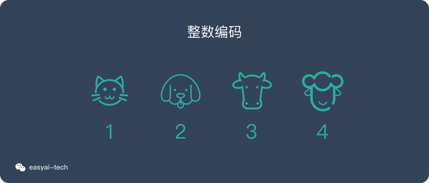
优点是表示简单，不会重复，缺点是无法表示词语之间的相关性，且不好对模型进行解释
预训练静态词嵌入（Word Embedding）
预训练静态词嵌入，通过专门训练一个神经网络，来得到单词的嵌入向量，这里的嵌入是分布式表示学习的思想
词嵌入模型一定是一个预训练模型，即先使用独热编码编码词汇，然后乘上预训练好的word2vec词向量矩阵，得到嵌入向量，然后进行下游任务
若将词独热编码，然后使用神经网络去预测句子中的词，那得到的参数矩阵中对应的行或列，本质上就可以视为对应词的词嵌入向量，这就是词嵌入的思想
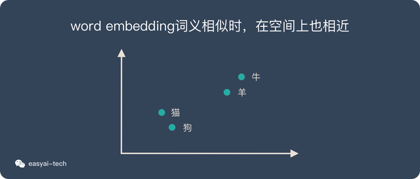
预训练静态词嵌入的优点：
可以将文本通过低维向量表达，不像 one-hot 编码那么长
语义相似的词在向量空间上也会比较接近
通用性强，可用于不同的任务当中
该方法是一种静态的方法，即训练完成后，单词的嵌入向量不再发生变化，这和动态嵌入有本质区别
目前静态词嵌入已经不是最好的方法，所以Word2Vec、GloVe等方法也基本不会再用到
word2vec
w2v 是NLP前期处理最重要的模型之一，它使用CBOW和Skip-gram两种轻量级的神经网络模型来得到词嵌入编码
CBOW（连续词袋）：根据句子前后，预测句子中缺少的某个词
CBOW结合了双向上下文，但本质上仍然是上下文词序无关的，skip-gram也是一样
skip-gram：和CBOW完全相反，是根据某个词，预测其上下文
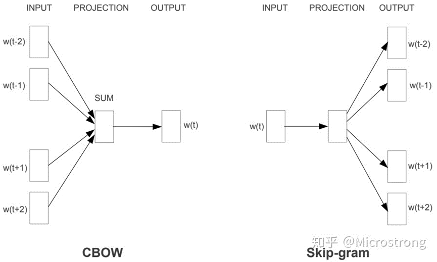
为了提高速度，word2vec通常采用两种加速方法：
负采样
分层softmax
word2vec的优缺点：
考虑了部分上下文，但没有考虑全局
生成的词向量维度稠密
通用性强，可用在多种 NLP 任务中
词和向量是一一对应的关系，其多义性无法解决
静态方法，虽然通用性强，但训练完成后嵌入向量就固定了
GloVe
对word2vec方法的扩展，它将全局统计和word2vec的基于上下文的学习结合了起来，并且致力于解决词的多义问题
ELMo
一种双向LSTM预训练模型，也是专门做词向量的，它不止训练出词向量矩阵，还将上下文信息融入到了这个矩阵中
ELMo由于是双向LSTM模型，可以利用上下文语义，且本身带有词序信息
ELMo能区分多义词
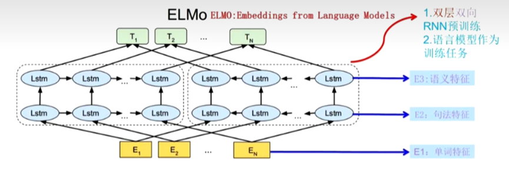
预训练动态词嵌入
以GPT和BERT等模型为代表
它首先进行分词，然后将词进行独热编码，输入神经网络中。神经网络中有专门的嵌入层（例如nn.Embedding），这个嵌入层结构类似线性层
设模型输入序列为
预训练是一种动态方法，尽管和word2vec一样，其嵌入层的矩阵对应每个词的嵌入向量，但嵌入层同样会受到反向传播和梯度下降的优化，每个词的嵌入向量是在训练过程中不断优化得到的
分词
分词是自然语言处理中十分关键的一步，无论是中文还是英文，都需要合适的分词方法，使得词表尽可能小，而被编码后的句子维度也不能太大
主流分词方法可参考HuggingFace 生态库中的分词器
2. Transformer及 LLM
位置编码
位置信息的种类
绝对位置信息：如
相对位置信息：如
不同位置间的距离：如
这些信息对于self-attention来说是无法分辨的信息，所以必须进行位置编码
例如，将输入序列的两个词调换顺序，则该序列的嵌入矩阵的两列会对换，但根据注意力计算公式，其得到的结果是完全一致的
位置编码的目标
可以用来表示 token 的绝对位置
序列长度不同的情况下，token 之间的相对位置（距离）也也要保持一致
可以用来表示模型在训练过程中从来没有看到过的序列长度
位置编码方法
整型值标记位置
给第一个token标记 1，第二个标记 2，以此类推。问题在于：
模型可能遇见比训练数据更长的序列，不利于泛化
位置的表示是无限的，随着序列长度的增加，位置值会越来越大
用 [0,1] 范围标记位置
将位置值限制在 [0,1] 之内，其中 0 表示第一个token，1 表示最后一个token。问题在于：当序列长度不同时，token 之间的相对距离是不一样的。例如：在序列长度为3时，token间的相对距离为0.5；在序列长度为4时，token间的相对距离就变为0.33
用二进制向量标记位置
考虑到位置信息需要和 input 相加，因此最好也是和 input embedding的维度
二进制编码，就是每个位置

二进制编码缺点：位置向量处在离散空间中，不同位置之间的变化是不连续的
用周期函数
综上，我们需要一个连续且有界的函数，最简单的正弦函数就可以满足，于是位置编码
其中
用
如果希望不同的位置向量可以通过线性转换得到，即表示一个相对位置：
其中
变换矩阵
Transformer位置编码
由
这是一种固定位置编码，和可学习的位置编码相对应；同时也是一种相对位置编码，和绝对位置编码相对应
原始 Transformer 模型
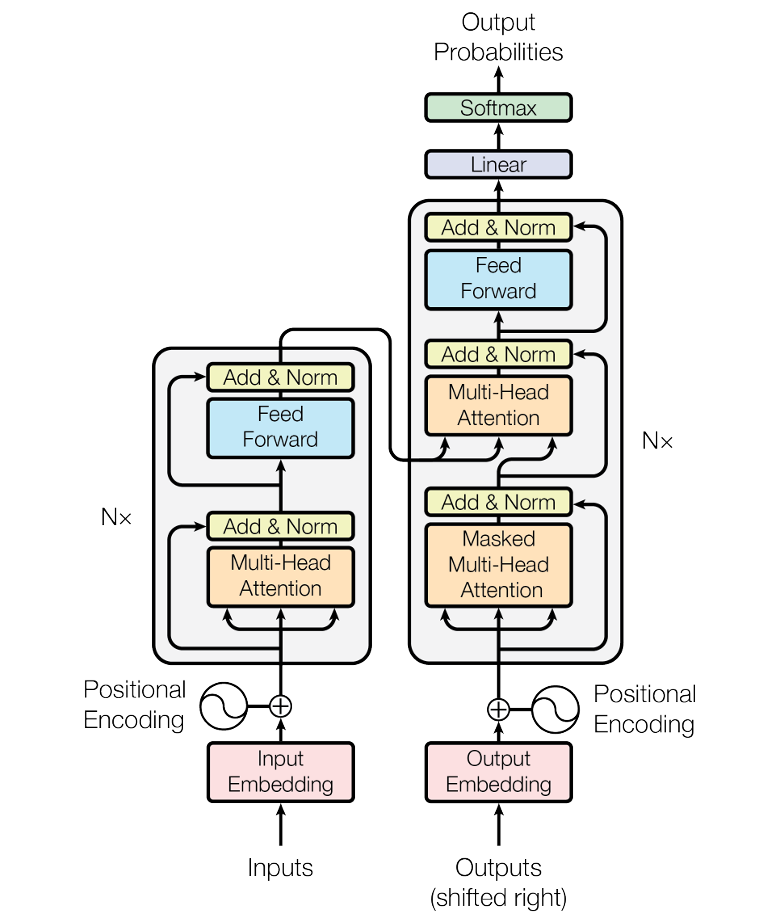
Transformer 模型是一个基于多头自注意力的 seq2seq 模型，在2017年被提出，是目前（截至2024）所有大语言模型的基础
Transformer 由一个编码器和一个解码器组成，图中Add&Norm表示残差连接和层归一化，Nx 表示 N 个相同模块进行堆叠，输入分叉为三个箭头指向多头注意力层表示输入分别映射到Q、K、V三个矩阵
编码器
编码器的输入为原始句子
1. 预处理
主要包含分词、词嵌入、位置编码三步
在位置编码中，当输入 x 比较小时，为了防止位置编码的值可能将x淹没，因此需要对x放缩，如x * math.sqrt(d_model)
分词即利用词表，将每个词进行独热编码
词嵌入，即将每个词嵌入为稠密的、较低维度的表示向量。在 Transformer 中，词嵌入是动态得到的，即构建一个线性层，其参数矩阵就是词表中的词的嵌入向量，每个词的独热编码乘上参数矩阵，即得到词嵌入向量。之所以是动态的，是因为该参数矩阵同样受到反向传播算法的优化
位置编码即由
经上述处理后的句子救赎输入 x
2. 多头注意力子层
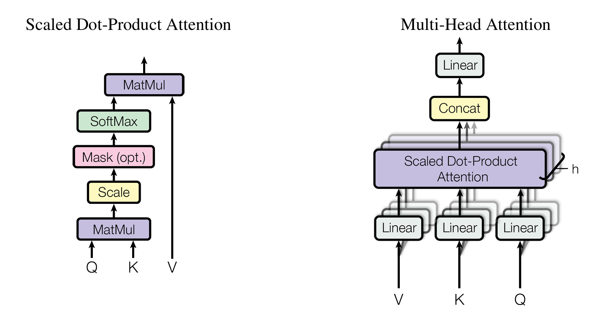
在自注意力中，输入的 x 分别乘上
当输入向量的维度 D 比较高时，点积模型的值通常具有比较大的方差，从而导致 Softmax 函数的梯度会比较小，缩放点积可减小输入的方差
注意力机制的更多信息参考深度学习部分
3. 逐位置前馈子层
逐位置前馈网络（Position-wise Feed-Forward Networks，FFN）是 Transformer 模型中编码器和解码器的组成部分之一，位于多头子注意力子层之后
逐位置前馈网络由两个线性变换组成，中间夹着一个 ReLU 激活函数。具体来说，对于每个位置的输入，网络独立地应用相同的转换，公式如下：
其中
注意区分逐位置前馈网络和全连接网络：
全连接网络的输入是一个向量，而FFN是一个矩阵
FFN可视为对序列中的每个元素（例如句子的每个词）通过一个参数相同的全连接网络进行处理，这是一种参数共享
两者都是通过线性层（nn.Linear）实现的，该层可以实现矩阵运算
两者本质都是实现线性变换（若加上激活函数则是非线性）
解码器
解码器和编码器非常类似，但多了一个掩码多头自注意力层
掩码多头自注意力层的输入
以语言翻译为例子：翻译 我喜欢天文 为英文 I love astronomy
在推理过程中，解码器使用之前已经输出的序列作为输入，当首次输出时，一般使用
<sos>等起始符号。例如，在翻译时，解码器先输入<sos>，然后输出第一个词I，接着将<sos> I一起作为解码器的输入，本次输出love，接着将<sos> I love作为输入，以此类推在训练过程中，解码器直接使用翻译过后的句子
<sos> I love astronomy作为输入，而不和推理一样逐个输出然后作为输入，这种方式称为教师强制，能提高训练效率。因为推理是自回归的，而直接使用完整的翻译后的句子会使得本次将要输出的词会“注意到”这个词后面的词，这显然和推理过程是不一样的。因此，还要将完整句子进行mask。例如输出首个词时，解码器的输入为<sos> mask mask mask，输出第二个词时，输入<sos> I mask mask，这就是掩码多头自注意力。论文架构图中（shifted right） 就是指每次输出后将 mask 右移一个单位
多头注意力层
该层的Q、K、V矩阵中，Q 矩阵为掩码多头自注意力层的输出，K、V矩阵均为编码器的输出。这实际上是一种交叉注意力机制。
Transformer 模型源码的一些参数解释
261'''2d_k ：K 矩阵的 维度，d_q 和d_v同理。若先不考虑batchsize，则K矩阵是 d_k * seq_len 的形状，3temperature：这里temperature就是 d_k ** 0.5，用于缩放点积4n_head：注意力头数5d_model：指在Transformer模型中表示输入和输出向量的维度。在Transformer中，输入和输出的向量都是表示词嵌入的形式，d_model=词嵌入的维度6d_word_vec：词嵌入的维度7n_position：代表句子的位置编码长度，也就是句子的最大长度，可分别为Encoder输入和Decoder的输出设置8d_in 表示第一个前馈层的输入，是d_model9d_hid 表示前馈第一个层的输出，也是第二个的输入维度10不过在位置编码时，d_hid代表输入的维度，即等于 d_word_vec 和 d_model11torch.matmul(a,b)：将矩阵a和b进行矩阵乘法14attn.masked_fill(mask == 0, -1e9)：将attn矩阵中对应mask中值为0的位置的元素替换为-1e9，attn和mask形状相同15nn.Linear(d_model, n_head * d_k, bias=False)：输入维度为 d_model，输出为 n_head*d_k，不要偏置16nn.Embedding(n_src_vocab, d_word_vec, padding_idx=pad_idx)使用：18n_src_vocab – 词典的大小尺寸，比如总共出现5000个词，那就输入5000。此时index为（0-4999）19d_word_vec – 嵌入向量的维度，即用多少维来表示一个符号。20padding_idx – 填充id，int型，比如，输入长度为100，但是每次的句子长度并不一样，后面就需要用统一的数字填充，而这里就是指定这个数字，这样，网络在遇到填充id时，就不会计算其与其它符号的相关性。（初始化为0）21这里可以直接用0这种，因为后面还有padding mask，用于指示真实数据的位置，不需要直接填负无穷，最后在注意力得分中使用函数将pad ding部分替换为-1e922n_trg_vocab：目标语言的词集大小24多头注意力的话，相当于在qkv的维度上拼接，也就是做成一个维度为 n_head*d_v 行 seq_len 列的矩阵，只是后面又变了一下形状26'''
基于 Transformer 模型的分类
因为 Transformer 的编码器和解码器十分相似，且 Decoder-Only 架构还要去掉解码器的交叉注意力层，因此以下不同类别，本质区别在于对输入的不同 mask 机制，所引起的注意力机制不同
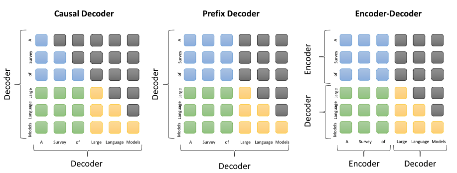
Encoder-Only
也称纯编码器模型，模型中仅使用Transformer的编码器，这些模型通常具有“双向”注意力，也被称为自编码模型
原理
这类模型的预训练通常围绕着以某种方式破坏给定的句子（如：通过随机遮盖其中的单词），并让模型重建给定的句子
适用场景
最适合于需要理解完整句子的任务，如句子分类、命名实体识、阅读理解问题等
代表
BERT
RoBERTa
DistilBERT
ELECTRA
Decoder-Only
也称纯解码器模型，在模型中仅使用Transformer的解码器。在每个阶段，对于给定的单词，注意力层只能获取到句子中位于将要预测单词的前面的单词，这些模型通常是以自回归的方式运作的
原理
这类模型的预训练通常围绕自回归地预测句子中下一个单词进行
当前 Decoder-Only 的模型，就是将指令、用户输入等全部输入，并通过掩码等机制，让模型做 “接龙”
分类
可进一步细分为 Prefix-Decoder（前缀解码器）和 Causal-Decoder（因果解码器）
Causal-Decoder 是当前主流，采用单向注意力掩码，确保每个输入 token 只能关注过去的 token 和它本身，代表为 ChatGPT
特点：
不区分输入和输出，通常通过 prompt 设计引导模型生成（如“输入：... 输出：...”）
输入处理受限（只能单向建模），但对长序列生成更高效
输入和输出被视为单一序列，生成完全自回归（逐 token 预测）
结构简单且统一，训练和推理更高效。但需要通过提示工程适配不同的任务
掩码矩阵的例子如下（严格三角矩阵）：
121输入序列：n=5 ("The", "cat", "sat", "on", "the")2生成序列：m=1 ("mat")3总序列长度：64掩码矩阵：5[6[0, -inf, -inf, -inf, -inf, -inf], # 位置 0 (The)7[0, 0, -inf, -inf, -inf, -inf], # 位置 1 (cat)8[0, 0, 0, -inf, -inf, -inf], # 位置 2 (sat)9[0, 0, 0, 0, -inf, -inf], # 位置 3 (on)10[0, 0, 0, 0, 0, -inf], # 位置 4 (the)11[0, 0, 0, 0, 0, 0] # 位置 5 (mat)12]
Prefix-Decoder 将输入序列作为前缀，输出序列作为后缀（suffix），统一处理为一个长序列。前缀部分允许双向注意力（类似编码器），输入 token 之间可互相观察；后缀部分自回归生成，使用因果掩码，只能看到前缀及之前的输出，代表为 ChatGLM
特点：
输入前缀为双向注意力，但生成时为单向
输入和输出共享同一组参数，通过注意力掩码区分处理逻辑
训练时输入和输出拼接为单一序列，推理时动态分割前缀和后缀
掩码矩阵的例子如下：
121输入序列：n=5 ("The", "cat", "sat", "on", "the")2生成序列：m=1 ("mat")3总序列长度：64掩码矩阵：5[6[0, 0, 0, 0, 0, -inf], # 位置 0 (The)7[0, 0, 0, 0, 0, -inf], # 位置 1 (cat)8[0, 0, 0, 0, 0, -inf], # 位置 2 (sat)9[0, 0, 0, 0, 0, -inf], # 位置 3 (on)10[0, 0, 0, 0, 0, -inf], # 位置 4 (the)11[0, 0, 0, 0, 0, 0] # 位置 5 (mat)12]
适用场景
由于这类模型具有生成能力，因此适合文本生成任务
为什么当前主流的 LLM 都是Decoder-Only的？
事实上 LLM 的架构哪个最好目前并没有定论，只是 Decoder-Only 不仅是一个生成模型（相较于解码器），还具有较少的参数（相较于完整 Transformer），不仅训练效率高，还有工程实现上更加简易
此外理论上 Encoder 的双向注意力可能会存在低秩问题，并削弱模型的表达能力，就生成任务而言，引入双向的注意力并没有实际好处。在同等参数量下，Decoder-Only 就是最好的范式
Encoder-Decoder模型
编码器-解码器模型是同时使用Transformer编码器和解码器的模型，是 seq2seq 模型的一种。在每个阶段，编码器的注意力层可以访问初始句子中所有单词，而解码器的注意力层只能访问位于输入中将要预测单词前面的单词
原理
编码器：双向注意力，能看到整个输入序列的上下文
解码器：自回归生成，使用因果掩码，只能看到当前及之前的输出
适用场景
最适合于围绕根据给定输入，生成新句子的任务，如翻译、摘要、生成性问答等
代表
BART：Facebook 提出
T5：谷歌提出
Marian
预训练模型的局限
预训练模型可能产生性别、种族等歧视，且难以通过微调去消除掉
ViT 模型
Vision Transformer，简称 ViT，是2020年谷歌提出的，他们将 Transformer 引入计算机视觉中，用于处理图像数据
原理
ViT 模型将图像进行分块从而得到图像块（Image Patchs），并将每一块视为一个 Token，而不是将图像视为一整个像素数组。随后用对 NLP 任务中的处理方法对序列化的图像进行处理
一般而言，ViT 模型主要用于图像分类，因此都基于 Encoder-Only 架构
架构
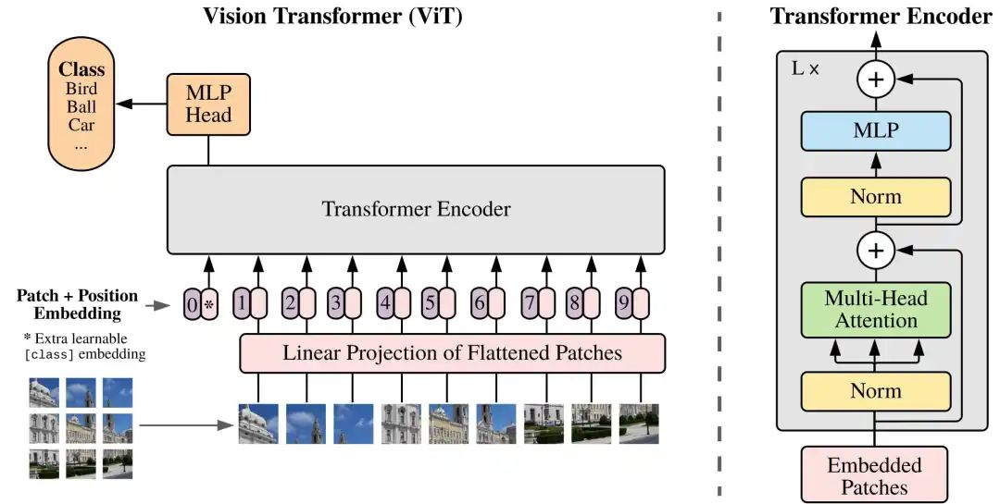
Patch Embedding：将图像分割成固定大小的 patchs
Linear Projection of Flattened Patchs：将每个 patch 都展开成一维向量，这里是通过线性层实现的，并且实现了维度的下降
可学习的分类嵌入
Position Embedding：位置编码
采用的可学习的位置编码。然而，当下游任务的图像尺寸和预训练的尺寸不同时，位置编码可能会出现问题，这时一般需要对预训练的位置进行插值来扩展
Transformer Encoder
可学习的分类嵌入
可学习的分类嵌入（Learnable Embedding）在图像块最前方添加一个可学习的嵌入，使得 ViT 的输入张量总长度为 N+1。最终取该 Token 作为输出
毕竟是分类问题，当经过 Encoder 处理后，分类信息完全可以保留在第一个向量中。对于 Encoder 的输出，只取第一个向量输入多层全连接，最终Softmax进行分类。BERT 分类也用了相同的方法
工作流程
将图像分割成 patchs
将每个patch都展开成一维向量
添加位置编码
加入额外的可学习的分类嵌入
输入 Encoder 进行分类任务
优点与局限
优点：
若先在一个庞大的数据集上预训练，然后根据特定任务微调，则 ViT 有着最好的性能
随着数据集和参数的增加，模型性能可以持续增加
缺点：
训练所需的计算量和数据集非常大
相较于 CNN，其归纳偏置比较少，且注意力层是全局提取信息，意味着它需要学习更多的信息，需要的计算量和数据集也就更大
模型格式
深度学习中，常见文件格式如下：
.safetensor
安全张量格式，是由 Hugging Face 推出的新型安全模型存储格式，特别关注模型的安全性
仅包含模型的权重参数，而不包含执行代码，这样可减少模型文件大小，提高加载速度
.ckpt
Pytorch Lighting 所采用的模型存储格式，不仅包含了模型参数，还包含优化器状态，以及可能的训练元数据信息，使得用户可无缝地恢复训练或执行推理
ckpt 已逐渐被 safetensor 替代
.bin
通用的二进制文件格式，在深度学习中一般用作存储模型权重
加载时，需要自定义逻辑来读取这些权重并加载到模型结构中
.pth/.pt
Pytorch中用于保存模型权重，或整个模型的标准文件格式
保存并加载整个模型
21torch.save(model,'model.pth')2model = torch.load('model.pth')仅保存状态字典
31torch.save(model.state_dict(),'model.pth')2model = Model() # Model 是自己定义的神经网络3model.load_state_dict(torch.load('model.pth'))注意实例化的网络和训练权重时的网络必须完全一致
.onnx
一种通用的模型交换格式，用于将模型从一个深度学习框架转换到另一个深度学习框架
3. 大模型相关技术
提示工程
提示工程（Prompt enginering）关注提示词的开发和优化，探讨如何设计出最佳的提示词，使得大模型应用到各个场景
LLM 的 API 参数
Temperature：该值越高，模型就会返回越具有随机性的结果，即更有创造力。注意不同模型的 Temperature 的范围不同
Top_p：和temperature的效果类似，值越高就越随机
一般 Temperature 和 Top_p 每次只需要调整其中一个
Max Length：控制模型生成的最大 Token 数
有助于防止模型生成冗长的、不相关的响应
Stop Sequence：控制模型的生成长度
Frequency Penalty：一个惩罚项，对下一个 token 进行惩罚，这个惩罚 和 token 在响应和提示的出现次数成比例，Frequency Penalty 越大则尽可能生成不和前文重复的结果，增加创造力
Presence Penalty：也是对重复 Token 施加惩罚，但对于所有重复的 Token，惩罚大小都是相同的
一般而言，同样只需要更改频率惩罚和存在惩罚其中的一个
Prompt 的种类
零样本提示
Zero-shot prompting：即用户不提供任务相关的示范，直接给出指令让 LLM 回答，模型需要具有较强能力才能完成
51指令：将文本分类为中性、负面或正面。2输入：我认为这次假期还可以。情感：3输出：5中性
少样本提示
Few-shot prompting：当零样本提示不起作用时，需要在prompt 中给出任务示例，这就是少样本提示
少样本提示利用了上下文学习，以实现更想要的输出结果，但对于复杂的思维问题，比如计算，少样本提示仍然无法满足要求
51提示：2“whatpu”是坦桑尼亚的一种小型毛茸茸的动物。一个使用whatpu这个词的句子的例子是：我们在非洲旅行时看到了这些非常可爱的whatpus。“farduddle”是指快速跳上跳下。一个使用farduddle这个词的句子的例子是：3输出：5当我们赢得比赛时，我们都开始庆祝跳跃。
链式思考
CoT：Chain-of-Thought Prompting，是一种提示的技巧
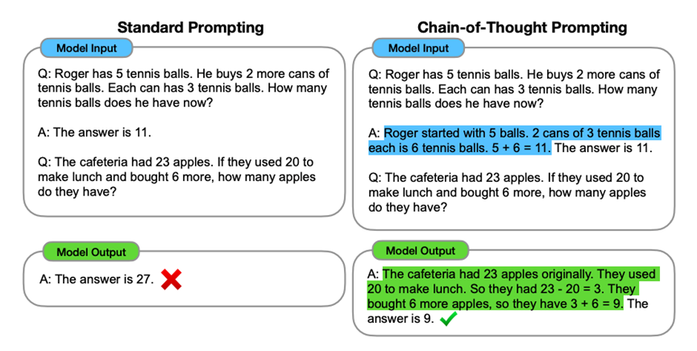
CoT 指定 LLM 逐步进行思考，而不一次性给出答案，由于 LLM 的自回归特性，将已思考得到的内容加入思考，从而实现尽可能复杂的思维运算
CoT 需要和少样本或零样本提示结合达到效果
使用 CoT，一般就是在 Prompt 里面加入请逐步思考之类的指令
51提示：2我去市场买了10个苹果。我给了邻居2个苹果和修理工2个苹果。然后我去买了5个苹果并吃了1个。我还剩下多少苹果？让我们逐步思考。3输出：5首先，您从10个苹果开始。您给了邻居和修理工各2个苹果，所以您还剩下6个苹果。然后您买了5个苹果，所以现在您有11个苹果。最后，您吃了1个苹果，所以您还剩下10个苹果。
自我一致性
通过少样本+CoT 采样多个不同的推理路径，并使用生成结果最一致的答案
简单来说，就是先利用 CoT 生成多个推理路径和答案，最终选择出现最多的，作为最终答案输出
生成知识提示
利用模型推理特点，引导其返回固定特征的答案，并增加其推理能力和稳定性
换句话说，通过例子给出的“知识”，让模型更偏向于输出它预训练所得到的知识库
prompting chaining
将任务分解成许多子任务，将子任务的prompt给LLM，得到的结果作为新prompt的一部分，再输入LLM
相当于手动的 CoT
思维树 ToT
思维树将引导语言模型把思维作为中间步骤解决通用问题
ToT 需要针对不同的任务来定义思维步骤的数量和每步生成候选项的数量，得到 ToT 的过程，需要使用图搜索方法或强化学习
prompt 要素
提示词可包含以下任意要素
指令：想要模型执行的特定任务或指令
上下文：包含外部信息或额外的上下文信息，引导 LLM 更好地响应
输入数据：用户输入的问题或内容
输入指示：指定输出的类型或格式
设计提示的通用方法
要有明确的指令，越具体越好，但不要太长而导致不精确
解释提示工程的概念。保持解释简短，只有几句话，不要过于描述。考虑某些限制条件，如输入 token 的长度限制
展示明确的格式
61提示：2提取以下文本中的地名。输出格式：地点：<逗号分隔的地点名称列表>3输入：“虽然这些发展对研究人员来说是令人鼓舞的，但仍有许多谜团。里斯本未知的香帕利莫德中心的神经免疫学家 Henrique Veiga-Fernandes 说：“我们经常在大脑和我们在周围看到的效果之间有一个黑匣子。”“如果我们想在治疗背景下使用它，我们实际上需要了解机制。””45输出：6地点：里斯本，香帕利莫德中心利用上下文逐步引导模型，让模型输出原本无法输出的内容
给模型设定身份（背景），可以更合理输出某一领域的内容
对于较为复杂的逻辑问题，可使用 CoT 让模型分步思考
使用少样本提示
微调
含义
微调（Fine Tuning）指在预训练大模型后，通过小批量的优质、符合特定任务的数据对模型参数进行调整，输出适合下游特定任务的数据
“预训练+微调”的意义
大模型的参数很多，从头开始完整训练一个模型的成本很高
Prompt Engineering 固有缺点，不适合部分场景
种类
FFT（Full Fine Tuning）：全量微调，针对全部的参数进行全量训练，也可以理解为训练一个新的模型，但使用预训练的模型进行新模型的初始化参数
PEFT（Parameter-Efficient Fine Tuning）：参数高效微调，即针对部分参数微调，也是目前主流方法
微调的技术路线
监督式微调（SFT）：人工标注数据，按传统监督学习方法进行微调
基于人类反馈的强化学习微调（RLHF）：把人类的反馈通过强化学习的方式引入到大模型的微调中，使得其结果符合人类的期望
SFT 和 RLHF 不是对立的，模型可以先 SFT 再进行 RLHF
基于 AI 反馈的强化学习微调（RLAIF）：和 RLHF 类似，但通过 AI 可解决部分人力成本和效率问题
PEFT的方案
Prompt Tuning：改动输入序列，即在输入序列 X 之前，增加一些特定长度的特殊 Token，以增大生成期望序列的概率
Prefix Tuning：思想和 Prompt Tuning 类似，但它在 Encoder 和 Decoder 的网络中加入了一些特定的前缀，从而实现其效果，也就是改动了权重矩阵
Adapt Tuning：在模型中添加 Adapter 层，在微调时冻结原参数，仅更新 Adapter 层，LoRA 也是这种方法
在预训练模型的每层中（多头注意力层、逐位置前馈层）插入用于下游任务的参数，即Adapter 模块
每个 Adapter 模块由两个前馈子层组成，第一个前馈子层将 Transformer 块的输出作为输入，将原始输入维度 d 投影到 m 维度，通过控制 m 的大小来限制 Adapter 的参数量，通常
m << d在输出阶段，第二个前馈子层还原输入维度，将 m 重新投影到 d 维，作为 Adapter 模块的输出
由于增加了额外的参数和计算量，Adapt Tuning 存在推理延迟问题
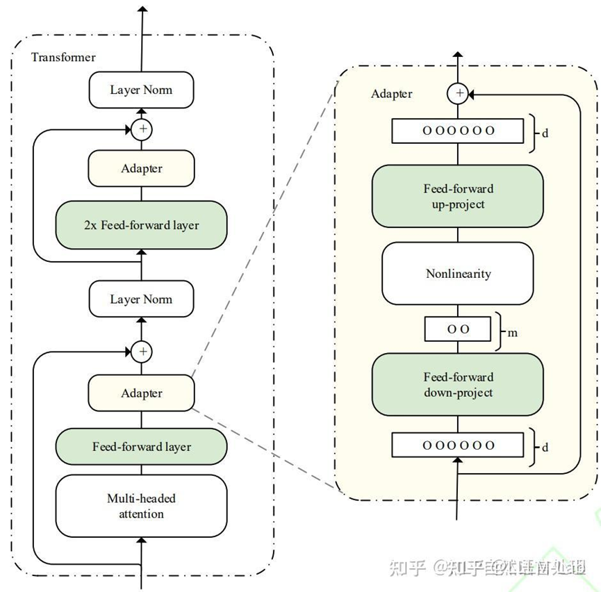
LoRA：大语言模型的低秩适应，可视为一种改进的 Adapt Tuning，它通过引入秩分解矩阵，以增加旁路的方式，代替了传统的在每层后面加入线性层
如果一个大模型是将数据映射到高维空间进行处理，假定在处理一个细分的小任务时，是不需要那么复杂的大模型的，可能只需要在某个子空间范围内就可以解决，那么也就不需要对全量参数进行优化了
如果对某个子空间进行参数优化，而且在特定任务中，可以达到全量微调的一定水平，如90%，则这个子空间参数矩阵的秩就可称为当前待解决问题的本质秩（intrinsic rank）
LoRA 假定大语言模型都是过度被参数化的，每个过度参数化模型的背后，都有一个低秩模型本质，LoRA 方法相当于提取出了大模型在针对特定任务的关键参数，在特定任务下，参数矩阵可以不满秩
FFT 后，模型的本质秩就会下降。越简单的任务，模型的本质秩就越低，基于此，可以通过优化密集层在微调过程中变化的秩分解矩阵来间接训练神经网络中的一些密集层，从而实现仅优化密集层的秩分解矩阵来达到微调效果
LoRA的优势：可以针对不同下游任务构建小型 LoRA 模块，从而在共享预训练模型参数基础上有效切换下游任务；使用简单的线性设计，部署时模型权重直接相加，几乎不存在推理延迟
LoRA 的训练过程
LoRA 的核心思想
假设预训练参数为
权重参数矩阵的更新
可以将 LoRA 的核心思想写成
其中 A、B 都是低秩矩阵，在训练时仅更新 AB，而不更新预训练的参数
r称为LoRA的精度，越高则精度越高，一般取4、8、16等

QLoRA：量化版的 LoRA 方案，减少成本
量化
量化（Quantization）主要通过对模型参数进行压缩和量化，从而降低模型的存储和计算复杂度，也就是说，压缩模型参数，使其精度更低，带来的好处有2个：
参数压缩后，可减少模型所需的存储空间（硬盘和显存），并加快模型加载时间
计算加速：一般情况下，低精度的整数运算的速度会快于浮点数运算，有些特殊硬件还会对低精度有专门的加速
神经网络中的数据类型
FP32
32位浮点数，也就是单精度浮点数，使用 4Byte 表示，能够表示的范围很大
FP16
半精度浮点数。一般而言，半精度就足够深度学习使用了，额外的精度没有带来实质性的提升，反而加大了性能和存储需求
bfloat16
谷歌开发的16位浮点数格式，专门为深度学习设计，相较于fp16，bfloat有1个符号位，8位阶码和7位尾数，使得它比fp16能表示的范围更大，虽然精度更低
INT8/FP8
将参数量化为8bit
NF4
全称 Normal-Float 4bit，是一种基于分位数量化的4位量化数据类型，专门用于对符合正态分布的数据（例如神经往里的权重）进行高效量化
一共有16个预定义的分位数作为量化级别，每个NF4的值对应一个分位数。其量化步骤为：
归一化：将数据归一化到
确定16个分位数
映射：将归一化后的数据映射到最接近的分位数上
INT4
4位量化数据，它将权重从高精度的数据转化为低精度的4位整数
大模型量化
研究发现不使用单精度而是直接使用半精度，几乎可获得相同的推理结果，但计算需求和模型大小直接减半，这使得开发者希望进一步量化模型
较大的模型受到精度变化的影响较小
知识图谱
知识图谱（Knowledge Graph）在2012年由谷歌提出，旨在实现更为智能的搜索引擎。目前知识图谱技术在智能搜索、智能问答等领域被广泛应用
定义
知识图谱是结构化的语义知识库，用于迅速描述物理世界中的概念及其相互关系
知识图谱通过对错综复杂的文档的数据进行有效的加工、处理、整合，转化为简单清晰的 (实体，关系，实体) 三元组，最后汇聚大量知识，从而实现知识的快速相应和推理
实体（Entity）：具有可区别性且独立存在的某种事物，是知识图谱中最基本的元素，例如“中国”、“960万平方公里”等
关系（Relationship）：连接不同的实体，指代实体之间的联系

如图，如果两个节点之间存在关系，那么它们就被一条无向边连接在一起，这个节点就称为实体，它们之间的这条边被称为关系
数据类型和存储方式
知识图谱的原始数据类型一般为三类（也就是互联网上的三类原始数据）：
结构化数据，如关系数据库
半结构化数据，如XML、JSON等
非结构化数据，如图片、音频等
存储以上数据的方式一般有两种：
资源描述框架（RDF）来规范存储格式
图数据库，例如 Neo4j
至于关系数据库存储方式，在知识图谱方面，当数据量增大时，使用图数据库会有显著的效率提升
知识图谱的架构
可分为逻辑架构和技术架构
逻辑架构
知识图谱在逻辑上可分为模式层和数据层两个层次
模式层更为底层，是知识图谱的核心，定义了知识图谱的构建方法。通常采用本体库来管理模式层。本体是结构化知识库的概念模板，通过本体库形成的知识库不仅层次结构较强，并且冗余层度较小
例如：实体--关系--实体，实体--属性--属性值
数据层由一系列事实组成，而知识将以事实为单位进行存储
例如：我--老婆--伊蕾娜
技术架构
技术架构描述了知识图谱的具体构建过程、知识更新过程等
知识图谱的构建过程主要包含：
信息抽取
知识融合
知识加工

信息抽取
信息抽取是构建知识图谱的第一步，关键问题是如何从异构数据源中自动抽取信息，一般分为实体抽取、关系抽取、属性抽取
实体抽取
又称为命名实体识别，是指从文本数据集中自动识别出命名实体。实体抽取的质量（用准确率等指标衡量）对后续知识获取效率和质量影响极大，因此是最为基础和关键的部分
关系抽取
从语料中抽取实体与实体之间的关系，将它们联系起来
属性抽取
属性抽取的目标是从不同信息源中采集特定实体的属性信息，实现对实体属性的完整勾画
知识融合
通过信息抽取，我们得到了实体、实体之间的关系和属性信息。但目前它们仍然是离散的，我们需要将它们拼接起来，主要包含两个步骤：
实体链接：从文本中抽取得到的实体对象，将其链接到知识库中对应的正确实体对象的操作
知识合并：合并外部知识库，或合并关系数据库。在这一步中，需要避免实体之间的冲突，以及冗余数据
知识加工
事实并不等于知识，要想获得网络化的知识体系，还需要经历知识加工的过程，主要包含本体构建、知识推理和质量评估三部分
知识更新
包含概念层的更新和数据层的更新。可分为增量更新和全量更新
模型蒸馏技术
模型蒸馏（Model Distillation，MD）是机器学习中的一种模型压缩与知识迁移方法，是一种迁移学习，旨在将复杂模型（通常称为教师模型）的知识转移到更轻量、高效的模型（学生模型）中，使其在保持或接近教师模型性能的同时，显著减少计算资源消耗和模型体积
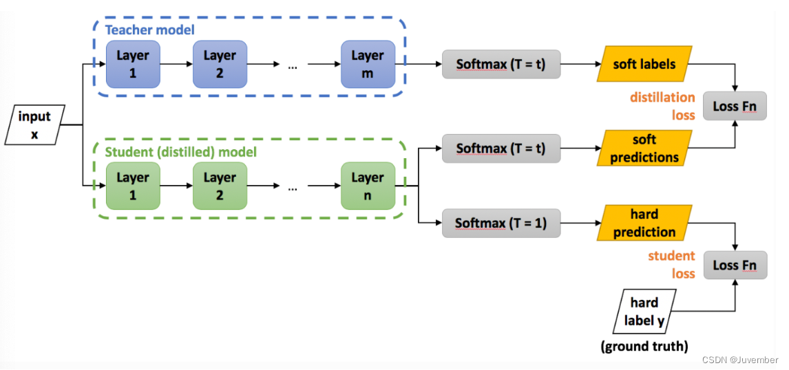
核心点
知识迁移：学生模型通过模仿教师模型的输出（如分类概率、中间特征或注意力机制等）来学习。学生模型和教师模型的架构可以不同
软标签（Soft Labels）：教师模型的输出通常不是硬标签（如“类别A”），而是包含类别间概率分布的软标签（如“类别A的概率为0.8，类别B为0.15”），这些软标签蕴含了类别间的关系，帮助学生模型更好地泛化
损失函数：通常使用一种结合了软标签损失和硬标签损失的混合损失函数。软标签损失鼓励学生模型模仿教师模型的输出概率分布，这通常使用 KL 散度来度量，而硬标签损失则鼓励学生模型正确预测真实标签
温度参数（Temperature）：在生成软标签时，常引入温度参数来平滑概率分布，使知识更易被学生模型捕捉
知识蒸馏
一种特殊的模型蒸馏，其中教师模型和学生模型具有相同的架构，但参数不同。也就是说，知识蒸馏是模型蒸馏的一个子集，模型蒸馏可能包含更复杂的知识迁移方式（如模型结构优化等）
在实际使用时常常将知识蒸馏和模型蒸馏混用
检索增强生成技术
检索增强生成技术（Retrieval-Augmented Generation，RAG），结合了检索与生成，指构建一个外部知识源，或让 LLM 可访问网络，LLM 回答时，将计算 prompt 和 知识源的相关性，将相关性强的段落输入 LLM 作为回答参考
该方法不仅可及时更新知识源，也能减少模型幻觉等问题
RAG 相关组件
检索器（Retriever）：
负责从知识库中快速检索相关文档或段落
常用方法：基于稀疏检索（如BM25算法）或稠密检索（如双编码器模型，如DPR）
生成器（Generator）：
基于检索到的信息和原始输入，生成最终回答
常用模型：BART、T5、GPT等序列到序列（Seq2Seq）模型
外部知识库：
可以是结构化数据库（如Wikipedia）、非结构化文本集合，或实时更新的动态数据源
4. Latent Diffusion 模型
简述
Diffusion的本质就是加噪的过程，也就是给训练的图片添加随机噪声，重复T步；而U-net根据加噪后的图片一步步denoise还原成原来的图像的过程，也就是去噪的过程，即反向扩散。
Stable Diffusion基于Latent Diffusion模型。Diffusion是一种相比GAN更容易训练的模型，然而它是自回归的（自回归体现在diffusion部分，也就是加噪部分），需要反复迭代计算，这就导致训练和推理的代价都很高。Latent diffusion model（LDM）在diffusion模型基础上引入了潜在空间（latent space），将图片从像素空间压缩到潜在空间并进行处理，能大大减少计算复杂度，同时效果也很好。
隐变量和隐空间
隐变量（Latent variable）
又称潜变量、潜在变量，是不可观测的随机变量，与可观测变量相对应。虽然不可观测，但我们可以通过可观测变量来推断它（隐变量可通过某个概率分布生成可观测变量）
隐空间（latent space）
为了降低计算成本，考虑将向量数据压缩到一个维度更低的空间中，这就是隐空间。数据压缩时，需保证学习到数据中比较重要的信息，被压缩到隐空间中的数据就是隐变量，我们无法直接观测它，但模型可以利用它生成可观测变量（利用解码器将数据重构）
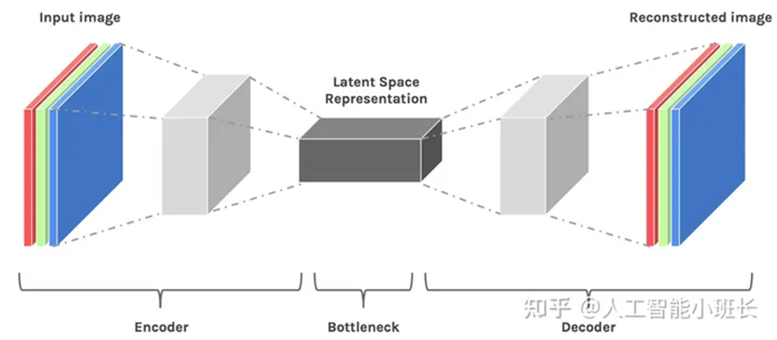
Latent Diffusion 模型结构
Latent Diffusion模型可划分为三层：
Text Encoder模块
本质是一个clip模型，如下所示：
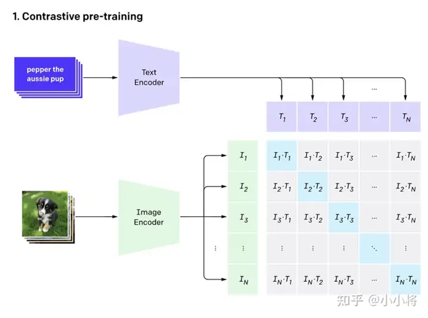
Clip（Contrastive Language-Image Pre-training）是将文本和图片联系起来的预训练、多模态模型，由openai开发，结合了自然语言处理和计算机视觉，旨在理解图像和文本之间的语义关系，在文生图中是非常重要的组件。其中，图片使用CNN提取特征，而文本则采用Text Transformer模型，将得到的结果直接计算余弦相似度，并不断迭代训练，使得文本-图像能对应。
在stable diffusion模型中，实际上只用到了文本编码部分，因为已经是训练好了的，图像编码部分就不需要了。
CLIP skip，即Clip模型的跳层连接（skip connections），是在神经网络中添加直接连接，将输入直接传递到某些层或层之间，允许低级特征和高级特征进行融合，增加模型的表达能力和学习能力。
文本编码层将输入文本进行编码，作为图像生成器的输入。在stable diffusion中，向量的维度为768。
Textual Inversion：文本反演，作用在clip层的embedding lookup，输入指定的自然语言，可生成指定的文本嵌入向量，如easynegative。
Image Generator：图像生成器
由UNet（一个噪音预测网络）和Scheduler（调度器）组成，在潜在空间中逐步处理信息。这里的UNet在原始版本的基础上加入了Transformer结构。
输入：向量表示的文本（嵌入后）以及一个初始化的多维数组（张量）组成的噪声（noise）；输出：经过处理的信息数组。
Schedule决定每个加噪的步骤添加多少噪声，可以是相同的量，更多的是先少后多。
基于VAE的图像编解码器
它是潜在空间和像素空间的桥梁，其中像素空间就是图片所在的空间，我们能够看到，而潜在空间则是运算的空间，只能被模型所理解。
输入：经过处理后的信息数组，输出：生成的图像，维度为：红绿蓝+宽高。
论文原图结构
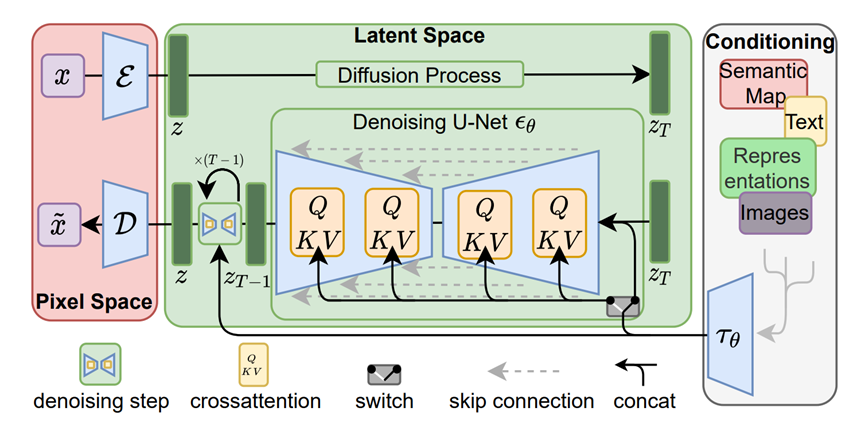
Pixel Space的
Cross Attention，即交叉自注意力，和自注意力类似，也是键值对注意力的一种。不同的是，交叉注意力是计算多个不同的输入特征不同位置之间的关联性，将额外信息输入用作查询Q的计算，本体数据用作键和值的计算，有利于信息交流与融合。
concat表示张量拼接，这里将来自不同特征的两个张量进行拼接，有利于特征融合、信息传递等。
每个denoising步骤都是多层的交叉注意力机制+跳层连接，得到该步的输出。
训练过程
VAE编码、正向扩散
随机挑选一张训练集中的图像，通过VAE编码器将其编码到隐空间。为其添加随机的高斯噪音，重复T步，此即扩散过程。添加噪声使模型更加容易学习到图片中的特征，并且随机噪声还增加了模型生成时的多样性
用加噪图像训练U-Net网络
u-net是一个噪声预测器，其功能是预测出图像中有哪些噪音，如果它能完好地从加噪后的噪音图像中准确地预测出噪音来（也就是还原原来的图像），则训练成功。这一过程也被称为反向扩散。
u-net的输入是加噪图片以及加噪的步数，也就是加了多少声。u-net预测出噪声后，将加噪图片减去噪声即可得到原图
但如果噪声很多，u-net无法完全预测出原图的细节，而只能得到一个大概的轮廓。这时把预测的图当作原图，再加上比之前少一点的噪声进去，比如加噪过程总共是50，这一次就加49，再次预测。重复该过程，得到原图
为了把文字的内容加入去引导图片生成的内容，首先需要把文本使用clip模型转换成文本特征，然后把文本特征也加入到u-net的输入中。在u-net中添加交叉注意力机制，通过文本特征来引导噪声的预测。但只是这样，只能得到和文本相关的，不能精确得到精确描述文本内容的图片。这时需要使用classifier free guidance（无分类引导）
VAE 解码生成图像
经过潜在空间的反向扩散过程后，由VAE解码器解码得到一幅图像
优化迭代模型
每次生成图像后，求loss，用梯度下降优化参数
生成图片（推理）过程
随机生成一个噪音
调度器和采样器，通过文本引导逐步去除噪声
将 Latent 中的数据通过VAE解码成像素空间的数据
U-Net 网络
一个基于卷积的语义分割网络，由于该网络的结构是对称的，因为形似英文字母U而被称为U-Net，采用Encoder-Decoder框架。Latent Diffusion模型在原始U-Net的基础上加入了Transformer模型。
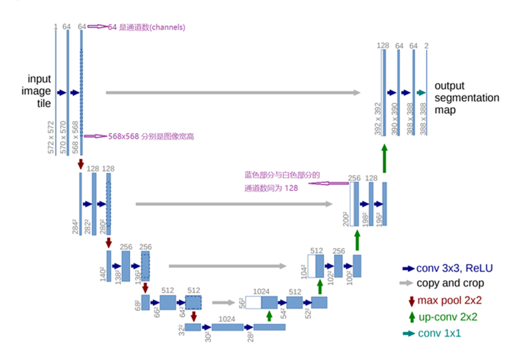
conv 3x3，relu表示使用3x3的卷积进行信息提取，并在最后使用relu激活函数。
copy and crop：表示复制和裁切，是一种针对图像数据的数据增强技术，尤其是在语义分割任务中常常被使用。语义分割是对图像中每个像素分配一个类别标签，而copy and crop则是先复制图片，再进行裁切，裁切出感兴趣的区域，再对其进行标记。这里复制和裁切后，再进行跳层连接（拼接张量）。
CFG技术：Classifier-free guidance
首先预测两个噪声，一个有文本特征引导，一个没有，然后两个相减，即得到了再文本引导下改变的不同的地方。为了让生成的图像更加精确，就把这种改变的信号放大，这个放大倍数就是GFC的值，一般在7倍左右，放得越大就越精确。将放大的信号与没有文本特征引导的噪声相加，就得到了加强文本引导的噪声。这之后，减去噪声得到模糊的原图，重新加上噪声继续预测，重复多次
若有负向提示词，则两个预测的噪声变成分别带有正向和负向提示词的噪声，然后相减得到远离负向、接近正向提示词的噪声。
其它和计算机视觉有关的概念
高频细节与低频细节
高频细节通常指的是图像中快速变化、细小的细节信息。这些细节通常包括边缘、纹理、细线等高频变化的部分；低频细节指的是图像中缓慢变化、较大范围的细节信息。这些细节通常包括图像的整体亮度、颜色分布和大范围的平滑区域。
Patch-based（基于块）方法
将输入图像分割为小块（patches），然后对每个小块独立地进行处理或分析。每个小块可以被视为一个独立的样本，并且可以使用传统的或深度学习的方法进行单独处理
图像流形（image manifold）
高维图像数据空间中的一个低维嵌入子空间，其中图像具有良好的连续性和结构性
VQregularized
VQ-VAE（Vector Quantized Variational Autoencoder）的正则化方法，VQ-VAE是VAE的一种扩展
Degradation（降质）
指的是对原始图像进行有意或无意的损坏、改变或降低质量的过程。这种降质操作可以是人为手动进行的，也可以是由于噪声、压缩、模糊等外部因素引起的。
5. GPT 模型解析
GPT 全称Generative Pre-trained Transformer，是 OpenAI 公司最早在2018年提出的模型架构
GPT 系列模型结构
GPT 1
来源：《Improving Language Understanding by Generative Pre-Training》
2018 年 OpenAI提出 GPT 模型，以“预训练+有监督微调”的方式来解决问题
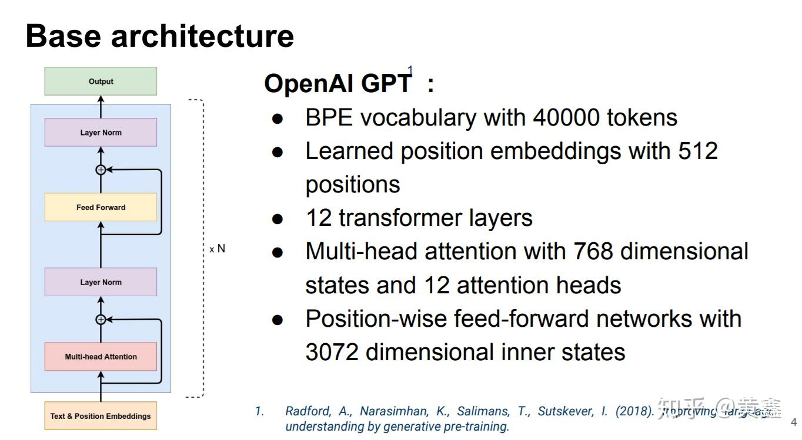
网络架构
以Transformer-Decoder 为核心，删掉了 Decoder Layer 中的第三层，也就是交叉注意力模块，只有掩码多头注意力和前馈层两层，这两层组成一个 Layer（Block），共12个Layer组成GPT1的核心部分。此外，残差连接和层归一化还保留着
GPT1 还将 Attention 层的维度提升到了 768，Head数提升到了12，QKV矩阵维度保持不变，仍为64，前馈层从经典的2048扩展到3072，总参数增加到1.5亿
优化了学习率预热算法，使用更大的BPE编码表，激活函数从ReLU改为GeLU，将位置编码改成了可学习的位置编码
注意力 Blocks，也就是 GPT 的核心部分，其输入输出的形状是完全一样的，因为除了最后一个Block之外，前一个Block的输出要输入到下一个Block
预训练目标
GPT在预训练阶段，是无监督的训练，采用 Transformer-Decoder-Only架构，预测下一个词出现的概率，也就是最大化似然函数：
其中
微调
GPT在模型的最后，根据特定任务，加上附加的线性层（称为适应层），然后进行有监督地微调。每个任务的附加线性层都不相同
微调的概率输出为：
其中
微调目标函数：
为了提升泛化性能，常常在微调的目标函数中加入辅助函数，而且可加速模型收敛，因此最终的微调目标函数为：
其中
GPT2：零样本学习
来源：《Language Models are Unsupervised MultiTask Learners》
GPT2放弃了 “预训练+微调” 的范式，而是仅通过“预训练+prompt” 的形式，使得模型自己解决多任务的问题。通过大量、多种类的语料，以及网络结构的加深，使得GPT2很好地完成了诸多任务而不需要微调，证明了 LLM 作为通用语言模型的可能性
模型改进
相较于GPT，GPT2在模型架构上改进较少，主要是增大了模型参数。GPT-2有四个不同大小的模型，其Block数和特征维数存在差异，下面是最大的GPT-2模型的变化
由于不再需要多任务微调，在最后一个 Block 后加入了线性层
特征维数从768扩展到1600，词表也扩大了
Block层从12 扩展到 48
而在训练数据上，随着模型参数增大，训练数据也增大了很多
GPT-3
来源：《Language Models are Few-Shot Learners》
GPT-3 在 GPT-2 的基础上进一步加大了网络结构，变成了 96 个 Blocks，共 1750 亿参数
下面是使用 one-shot prompt 的示例：
在模板中，指令用于指示模型要做什么，用户输入就是给出示例，以及给出要完成任务的原始输入
41Translate English to French:2sea otter => outre de mer3plush girafe => girafe peluche4cheese =>
InstructGPT、ChatGPT
得到GPT-3后，尽管它的能力很强，但在某些方面，如对话，仍然需要提升。OpenAI 利用有监督学习对 GPT-3 进行了微调，包含指令微调（指示学习）和RLHF，得到了InstructGPT。ChatGPT 是 InstructGPT 针对聊天进一步强化的模型，能够生成更详细的回答
InstructGPT和ChatGPT都是GPT-3的微调版本，统称为GPT-3.5
GPT 模型核心特点
预训练
pre-training 是一种自监督学习，其本质仍然是无监督的学习，模型需要根据前面的输入预测下一个单词，并输出概率最大的单词
Transformer-Decoder
GPT 模型结构和 Transformer 的 Decoder 部分很像，但去掉了交叉注意力模块
自回归
在生成文本时，模型会根据前面已经生成的内容来预测下一个单词，这之后，将输出的单词加入上下文，并根据这个上下文继续预测下一个单词，直到生成终止符号
如何得到一个ChatGPT
预训练：即无监督学习，以海量互联网语料来预训练一个 GPT 模型，扩充了它的知识库，并达到良好的词嵌入能力，以及生成流畅的文本
微调：监督学习，在互联网语料库中收集问题并人工编写答案，以此进行训练，规范回答
RLHF 训练：建立一个奖励模型，对于多个输出，人工进行喜好排序，以此训练奖励模型。之后，利用 PPO 算法，基于强化学习的方式来微调模型
6. HuggingFace 生态库
HuggingFace是一个 AI 开源社区，包含了诸多预训练的模型以及数据集
一般首次使用某个模型之前，都需要下载。这之后就可以在本地直接调用了
安装基本库与登录Huggingface
HuggingFace 生态中，包含：Transformers、Datasets、Tokenizers、Accelerate等库
注意：由于新模型层出不穷，且需要各种优化，常常会报各种奇怪的错误，无法加载分词器等，这个时候可以考虑升级transfrormers等包，可能会有用
pip install "transformers[sentencepiece]"：后缀为分词器，指定安装transformers的开发版本，开发版本的依赖更全
transformers库提供了各种预训练模型，开发者可选择模型进行训练或者微调，这使得一些深度学习任务变得非常简单
pip install datasets -U：安装数据集库，用于从 HuggingFace 加载数据集
pip install evaluate：安装评估库，用于评估模型好坏
pip install accelerate -U：安装加速库，这个库是Trainer类所依赖的。并且Accelerate库支持在多个GPU或TPU上启用分布式训练
pip install peft：安装高效参数微调库，该库可使用 Adaptive Fine Tuning方法，实现高效微调
pip install bitsandbytes：安装量化库，可使用QLORA
登录Huggingface
有的模型需要使用 Access Token 登录，才能正常使用，例如 Gemma 模型
登录huggingface，在设置中创建一个 Token，注意权限问题，对于大部分开源模型，你只有 read 权限
用 pip 下载huggingface_hub库：
pip install --upgrade huggingface_hub登录
21from huggingface_hub import login2login(token='hf_xxxxxxxx')
有的时候，登录会在获取模型时，例如：tokenizer = AutoTokenizer.from_pretrained(model_id, token=os.environ['HF_TOKEN'])，但这种方法可能无法成功
pipeline
什么是 pipeline
pipeline()函数是 transformers 库中最基本的对象，他将模型必要的预处理和后处理步骤连接起来。当第一次运行时，会下载预训练模型和分词器（tokenizer）
下面是一个使用情感分类的预训练模型的示例：
61from transformers import pipeline2
3classifier = pipeline("sentiment-analysis") # 情感分析4answer = classifier("I've been waiting for a HuggingFace course my whole life.")5
6# answer：[{'label': 'POSITIVE', 'score': 0.9598047137260}]也可也用列表形式传入多句话，返回多个结果
常见pipeline
feature-extraction特征提取：把一段文字用一个向量来表示fill-mask填词：把一段文字的某些部分mask住，然后让模型填空ner命名实体识别：识别文字中出现的人名地名的命名实体question-answering问答：给定一段文本以及针对它的一个问题，从文本中抽取答案（必须有文本）sentiment-analysis情感分析：一段文本是正面还是负面的情感倾向summarization文本摘要：根据一段长文本中生成简短的摘要text-generation文本生成：给定一段文本，让模型补充后面的内容translation翻译：把一种语言的文字翻译成另一种语言zero-shot-classification零样本分类，不需要给出任何微调，可直接执行任务。这个 pipeline 要求提供来分类 被输入文本 的标签，结果会返回属于某标签的的概率
以上模型使用方法大同小异，可前往 HuggingFace 查看详细教程
此外，可通过 pipeline 的 model 参数指定要选用的模型：generator = pipeline('text-generation', model='distilgpt2')。模型的名字可在模型中心中找到
pipeline的内部
pipeline由三部分组成：
Tokenizer
Model
Post-Processing
代码示例
不使用 pipeline，而是分别使用三个组件自己来构建
231from transformers import AutoModelForSequenceClassification2from transformers import AutoTokenizer3import torch4
5checkpoint = 'distilbert-base-uncased-finetuned-sst-2-english'6# 创建一个 tokenizer 和 模型， 都使用 bert 基础模型7tokenizer = AutoTokenizer.from_pretrained(checkpoint)8model = AutoModelForSequenceClassification.from_pretrained(checkpoint)9
10raw_inputs = [11 "I've been waiting for a HuggingFace course my whole life.",12 "I hate this so much!",13]14
15inputs = tokenizer(raw_inputs, padding=True, truncation=True, return_tensors='pt')16# pt代表pytorch张量，tf代表tensorflow张量，np代表numpy数组17
18outputs = model(**inputs)19print(outputs.logits.shape) # 2*2 的logits张量20
21# 后处理22predicitions = torch.nn.functional.softmax(outputs.logits,dim=-1)23print(predicitions) # 输出概率一些问题
以下的问题，如果不是要把 Tokenizer 强行分为两步，可直接调整 Tokenizer 的参数使得问题解决：inputs = tokenizer(raw_inputs, padding=True, truncation=True)
批量问题
有的模型默认是传入的列表，如果只有一个句子，且直接传入字符串，则可能会出错
长序列问题
Transformers模型处理长度是优先的，要么使用可处理更长序列的模型，要么对输入进行截断：[sequence = sequence[:max_sequence_length]]。这里的长度是Tokenizer之后的长度
padding问题
对于长度不一的序列，需要进行padding，可使用tokenizer.pad_token_id填充短句
71batched_ids = [2 [200, 200, 200],3 [200, 200, tokenizer.pad_token_id],4]5
6outputs = model(torch.tensor(batched_ids))7print(outputs.logits)注意力遮蔽
attention_masks是和输入张量形状完全相同的张量，用 0 和 1 标记，告诉模型的注意力层应该忽略哪些信息
可使用注意力遮蔽的方法实现 padding
Tokenizer：分词器
使用分词器进行预处理，常见的有 AutoTokenizer，其作用是为文本进行编解码，主要分两步：
Token化，也就是分词
转化为输入ID，这个ID不是独热向量，而是一个整数，代表词汇在词表中的第几个位置
分词器会自动在句子首部加上一个CLS特殊词，表示句子的开始，在句末加上SEP表示句子结束
Tokenizer 还可以通过设置 max_length 和 padding 参数对句子进行填充、截断等操作
Tokenizer 将在 预处理和后处理 均参与模型的运作，前者是根据词表，将字词编码成整数，后者是根据概率，将整数解码成字词
分词方法
由于不同的模型，分词方法也可能不一样，因此我们使用模型的名称来实例化Tokenizer，意在使用和模型相同的分词方法，以确保和模型预训练时使用相同的分词规则
基于词的Tokenizer（Word-based）
直接使用空格、各种标点，来对句子进行分隔，将其分解成单词。每个单词赋予一个 ID，从0开始一直到词汇表大小
无法区分形态不同的词汇，如 dog 和 dogs，以及 run 和 running等，模型会认为它们是不相似的
基于字符的Tokenizer（Character-based）
将文本拆分成字符而不是单词，这使得词汇量要小得多
但对于字符来说，其本身并没有像单词那样表意，而且每个单词由于有多个字符，使得输入会变得很大
字词标记化（subword tokenization）
该算法依赖于这样一个原则：不应该将常用词按字符拆分，而应该将稀有词分解为有意义的字词，如将稀有词 annoyingly拆分成annoying和ly
其它Tokenizer方法
Byte-level BPE：用于GPT-2
WordPiece，用于BERT
SentencePiece or Unigram：用于 T5 等多个多语言模型
在使用特定预训练模型时，注意选择正确的 Tokenizer
使用Tokenizer
一个Tokenizer不仅包含分词方法，也包含其词汇表
在Pycharm中输入from transformers import Tokenizer之后，会看到非常多的Tokenizer方法，其中AutoTokenizer最方便，可根据 model 名称自动获得其分词器。这里以BertTokenizer为例：
51from transformers import BertTokenizer2
3tokenizer = BertTokenizer.from_pretrained('bert-base-cased')4res = tokenizer('using a transformer network is simple') # 分词5tokenizer.save_pretrained('保存路径') # 保存文件Tokenizer 返回的分词结果是一个字典，其中包含词向量、mask等键
Tokenizer 也能支持输入
编码过程：Tokenize() 和 token2id
Tokenizer的两个主要方法，分别对应编码的两个处理步骤：
tokenizer.tokenize(text)：分词（标记化）的方法，返回的是一个包含Token的字符串列表ids = tokenizer.convert_tokens_to_ids(token_list)：将Token转变成 整数id 列表
解码过程
解码只有一步，即一次性从整数id列表转变为句子
31decoded_string = tokenizer.decode([7993, 170, 11303, 1200, 2443, 1110, 3014])2print(decoded_string)3# 输出：'Using a Transformer network is simple'
Model：模型
将数据传入模型，并输出结果，常见的有 AutoModel系列
对于 AutoModel 类来说，其作用是取出模型输出的隐藏状态。要真正运用到任务中，需要使用带后缀的 model， 如 AutoModelForSequenceClassification。也就是说AutoModel本身不完整，这一点和Tokenizer使用AutoTokenizer后只要指定名称不一样

模型头（Head）将隐藏状态的高维向量作为输入，并将其投影到不同的维度，它们通常由一个或几个线性层组成，适配不同下游任务。因此，从 AutoModel，衍生出来多个不同类别的模型，如 AutoModelForSequenceClassification 用于分类
代码示例：使用 BERT 模型
模型的加载与保存
如果是从头开始构建一个 bert 模型（初始参数会随机生成），可以：
51from transformers import BertConfig, BertModel2
3# 创建 配置 和 模型，config 定义了bert的hideden_size、num_layers等参数4config = BertConfig()5model = BertModel(config)但用的更多，还是使用预训练的模型，如下：
51from transformers import BertModel2
3model = BertModel.from_pretrained('bert-base-cased')4# 保存文件5model.save_pretrained('文件夹名称')将保存两个文件，其中config.json保存模型配置文件，而model.safetensor则是模型权重文件
模型标识符也就是模型名字，它可以是任何模型，但在使用BertModel时，需要保证 这个模型和bert体系兼容
进行推理
将经过Tokenizer的数据，直接传入模型即可
21outputs = model(model_inputs)2# model_inputs是Tokenizer组件的输出Post-Processing：后处理
model 得到的结果一般不是概率，而是 logits（原始预测值），还需要将其通过 softmax 转化为概率
后处理一般使用 pytorch 或 tensorflow 带的 softmax 进行处理
41import torch2
3predictions = torch.nn.functional.softmax(outputs.logits, dim=-1)4# predictions 即为概率微调预训练模型（全量）
在huggingface中，默认是全量微调（FFT），也就是对于整个预训练模型都进行调整
对于HuggingFace的预训练模型，都有一个默认的和任务相关的损失函数，因此一般无需自定义损失函数
微调预训练模型，首先要明确预训练模型的特点，比如输入是什么，才能对其进行微调
加载数据集、查看数据集属性
模型中心不止包含模型，也有一些数据集，这里使用MRPC数据集中的GLUE基准测试数据集，它是用来衡量机器学习的文本分类性能
下面的例子是，每次将两句话输入模型，模型判断两句话的含义是否等同
141from datasets import load_dataset2
3# 加载 mrpc 数据集中的 glue 基本测试数据集4raw_datasets = load_dataset('glue','mrpc')5print(raw_datasets) # 输出数据集，得出其结构6
7raw_dataset_train = raw_datasets['train']8print(raw_dataset_train.features) # 输出数据集的属性9
10# 结果：11{'sentence1': Value(dtype='string', id=None),12 'sentence2': Value(dtype='string', id=None),13 'label': ClassLabel(num_classes=2, names=['not_equivalent', 'equivalent'], names_file=None, id=None),14 'idx': Value(dtype='int32', id=None)}预处理数据
多个输入的token化
预处理数据集，将文本转化为模型能理解的张量。然而，在这里两个句子都是输入。Tokenizer支持两个句子输入，输出一整个句子，但可通过一个token_type_ids遮罩来区分两个句子（这和一个列表输入tokenizer不同，前者是多个样本，这里的多个句子是同一个样本中的）。这里是bert支持token_type_ids，因此才使用bert模型
71inputs = tokenizer("This is the first sentence.", "This is the second one.")2# 输出3{ 4 'input_ids': [...],5 'token_type_ids': [...],6 'attention_mask': [...]7}使用datasets.map()函数
该函数允许直接对数据集进行处理，返回的也是数据集，并加快处理速度。它接收一个处理的函数，并应用到数据集（是包含训练集、测试集等的字典）的每个 value 上
51# 定义map的处理函数：将所有数据全部token化2def tokenize_function(example):3 return tokenizer(example["sentence1"], example["sentence2"], truncation=True)4
5tokenized_datasets = raw_datasets.map(tokenize_function, batched=True)动态填充（dynamic padding）
在Tokenizer时，进行padding效率并不高，更好的做法是在构建batch时进行padding，这样就只需要padding到批处理样本的最大长度，而不是整个数据集最大长度，这就是动态填充
可使用collate函数进行动态填充，它是构建Dataloader时传递的一个参数，而且它还能将数据集转化为Pytorch张量。不过它需要自己构建，但transformers库提供了一个DataCollatorWithPadding函数，可以用于构建collate函数
完整预处理代码
一次性将整个数据集全部预处理，便于后面训练、验证等
121from datasets import load_dataset2from transformers import AutoTokenizer,DataCollatorWithPadding3
4raw_datasets = load_dataset("glue", "mrpc")5checkpoint = "bert-base-uncased"6tokenizer = AutoTokenizer.from_pretrained(checkpoint)7
8def tokenize_function(example):9 return tokenizer(example["sentence1"], example["sentence2"], truncation=True)10
11tokenized_datasets = raw_datasets.map(tokenize_function, batched=True)12data_collator = DataCollatorWithPadding(tokenizer=tokenizer)Tokenizer 类在处理整个数据集时，对其Token化，是在原有字典的基础上，增加一些键值对，如下。其中input_ids就是token化的数据
21# 处理后的训练集结构增加的键值对2{'input_ids': Sequence, 'token_type_ids': Sequence, 'attention_mask': Sequence}使用Trainer API 微调模型
基本使用
transofmers 提供了一个Trainer类来帮助在自己的数据集上微调任何模型，注意要先安装加速库accelerate
在定义Trainer之前，需要定义一个TrainingArguments类，它将包含训练个评估的所有超参数，大部分可按需求保持默认，必须提供的只有保存路径
31from transformers import TrainingArguments2
3training_args = TrainingArguments("test-trainer")定义模型，这里以分类模型为例：
31from transformers import AutoModelForSequenceClassification2
3model = AutoModelForSequenceClassification.from_pretrained(checkpoint, num_labels=2)实例化Trainer类，它包含训练所必须要求的东西，如模型、参数、数据集等
101from transformers import Trainer2
3trainer = Trainer(4 model,5 training_args,6 train_dataset=tokenized_datasets["train"],7 eval_dataset=tokenized_datasets["validation"],8 data_collator=data_collator,9 tokenizer=tokenizer,10)以上工作准备好后，只需要
trainer.train()即可开始微调
训练时展示更多信息
以上只是一个最基本的使用，要想在训练时每个step进行评估并计算模型好坏，则需要评估工作
这里使用evaluate库，它可以轻松加载各种指标用于计算模型好坏
41import evaluate2
3metric = evaluate.load("glue", "mrpc")4metric.compute(predictions=preds, references=predictions.label_ids)完整代码
441import numpy as np2from datasets import load_dataset3from transformers import AutoTokenizer,DataCollatorWithPadding4from transformers import TrainingArguments5from transformers import Trainer6import evaluate7from transformers import AutoModelForSequenceClassification8
9# -----1.预处理数据10raw_datasets = load_dataset("glue", "mrpc")11checkpoint = "bert-base-uncased"12tokenizer = AutoTokenizer.from_pretrained(checkpoint)13
14def tokenize_function(example):15 return tokenizer(example["sentence1"], example["sentence2"], truncation=True)16
17tokenized_datasets = raw_datasets.map(tokenize_function, batched=True)18
19data_collator = DataCollatorWithPadding(tokenizer=tokenizer)20
21# ------2.构建训练模型22training_args = TrainingArguments('save-dir',evaluation_strategy='epoch')23
24# num_labels 是 这个分类模型特有的，2代表是二分类25model = AutoModelForSequenceClassification.from_pretrained(checkpoint,num_labels=2)26
27# 构建评估函数28def compute_metrics(eval_preds):29 metric = evaluate.load('glue','mrpc')30 logits, labels = eval_preds31 predictions = np.argmax(logits,axis=-1)32 return metric.compute(predictions=predictions,references=labels)33
34trainer = Trainer(35 model,36 training_args,37 train_dataset=tokenized_datasets['train'],38 eval_dataset=tokenized_datasets['validation'],39 data_collator=data_collator,40 tokenizer=tokenizer,41 compute_metrics=compute_metrics42)43
44trainer.train()使用Pytorch代码微调预训练模型
其中数据预处理等部分和使用Trainer的是相同的，后面在构建模型、数据加载器等方面会有不同
预处理部分和上面的相同，但需要对tokenized_datasets做一些处理，来处理Trainer自动为我们做的一些事情
预处理数据：加载数据、token化、padding、dataloader等
构建模型：模型、优化器、学习率调度器等
进行训练和验证
971from datasets import load_dataset2from transformers import AutoTokenizer,DataCollatorWithPadding3import evaluate4import torch5from tqdm.auto import tqdm6from transformers import AutoModelForSequenceClassification7from transformers import AdamW8from transformers import get_scheduler9from torch.utils.data import DataLoader10
11device = torch.device('cuda') if torch.cuda.is_available() else torch.device('cpu')12
13# -----1.预处理数据14raw_datasets = load_dataset("glue", "mrpc")15checkpoint = "bert-base-uncased"16tokenizer = AutoTokenizer.from_pretrained(checkpoint)17
18def tokenize_function(example):19 return tokenizer(example["sentence1"], example["sentence2"], truncation=True)20
21tokenized_datasets = raw_datasets.map(tokenize_function, batched=True)22
23data_collator = DataCollatorWithPadding(tokenizer=tokenizer)24
25# 删除不需要的列，模型不能接收这些列26tokenized_datasets = tokenized_datasets.remove_columns(["sentence1", "sentence2", "idx"])27# 改名，因为模型期望参数为lables28tokenized_datasets = tokenized_datasets.rename_column("label", "labels")29# 将数据集转化为Pytorch张量30tokenized_datasets.set_format("torch")31
32# 定义数据集加载器33train_dataloader = DataLoader(tokenized_datasets['train'],shuffle=True,batch_size=8,collate_fn=data_collator)34eval_dataloader = DataLoader(tokenized_datasets['validation'],batch_size=8,collate_fn=data_collator)35test_dataloader = DataLoader(tokenized_datasets['test'],batch_size=8,collate_fn=data_collator)36
37
38# 2.------构建模型39# 使用预训练模型的参数对要训练的模型进行参数初始化40model = AutoModelForSequenceClassification.from_pretrained(checkpoint,num_labels=2)41optimizer = AdamW(model.parameters(),lr=5e-5)42model.to(device)43
44num_epochs = 345num_training_step = num_epochs*len(train_dataloader)46lr_scheduler = get_scheduler(47 'linear',48 optimizer=optimizer,49 num_warmup_steps=0,50 num_training_steps=num_training_step51)52progress_bar = tqdm(range(num_training_step))53
54
55# ------3.训练和测试模型56for epoch in range(num_epochs):57 # 训练阶段58 model.train()59 for batch in train_dataloader:60 batch = {k:v.to(device) for k, v in batch.items()}61 outputs = model(**batch)62 loss = outputs.loss63 loss.backward()64
65 optimizer.step()66 lr_scheduler.step()67 optimizer.zero_grad()68 progress_bar.update(1)69
70 # 验证阶段（验证集）71 metric = evaluate.load('glue','mrpc')72 model.eval()73 for batch in eval_dataloader:74 batch = {k:v.to(device) for k,v in batch.item()}75 with torch.no_grad():76 outputs = model(**batch)77
78 logits = outputs.logits79 predictions = torch.argmax(logits,dim=-1)80 metric.add_batch(predictions=predictions,references=batch['labels'])81
82 print(metric.compute())83
84
85# 模型评估（测试集）86metric = evaluate.load('glue','mrpc')87model.eval()88for batch in test_dataloader:89 batch = {k:v.to(device) for k,v in batch.item()}90 with torch.no_grad():91 outputs = model(**batch)92
93 logits = outputs.logits94 predictions = torch.argmax(logits,dim=-1)95 metric.add_batch(predictions=predictions,references=batch['labels'])96
97print(metric.compute())PEFT：高效微调
使用PEFT高效微调方法，可以让训练成本降低，且得到和全量微调类似的性能
目前peft库已支持包括LoRA、Adapt tuning、Prefix tuning等在内的多种高效微调方法
peft库仅训练一个小型神经网络，被称为 Adapter，在实际使用时，将大模型和微调模型结合使用
训练PEFT模型
训练PEFT模型时，需要从peft包中导入三个组件：
get_peft_model：传入预训练模型和peft模型，将其包装成完整的微调模型
xxxConfig：指定PEFT方法，随后生成该方法的配置文件。例如LoraConfig就是使用Lora
TaskType：用于指定任务类型，如seq2seq任务
191from transformers import AutoModelForSeq2SeqLM,AutoTokenizer2from peft import get_peft_model, LoraConfig, TaskType3
4checkpoint = 'bigscience/mt0-large'5base_model = AutoModelForSeq2SeqLM.from_pretrained(checkpoint)6tokenizer = AutoTokenizer.from_pretrained(checkpoint)7
8# 创建PEFT方法对应的配置9peft_config = LoraConfig(10 task_type=TaskType.SEQ_2_SEQ_LM,11 inference_mode=False,12 r=8,13 lora_alpha=32,14 lora_dropout=0.115)16
17# 通过 get_peft_model 包装基础模型18model = get_peft_model(base_model,peft_config)19# model.print_trainable_parameters() # 输出可训练的参数数量以上是构建模型的部分，这之后，模型的训练和全量微调完全一致
一些参数说明：
task_type：用于指定任务类型
inference_mode：模型是否是推理模型，由于我们要进行训练，所以设置为False
r：lora模型的精度，值越大则精度越高，其本质是秩分解矩阵的分解尺寸
lora_alpha：lora的缩放因子，默认为r*2
保存模型
保存模型，用的是peft的话，只会保存PEFT权重，因此很小
11model.save_pretrained('save_name')加载模型并进行推理
121# 加载模型并推理2from transformers import AutoModelForSeq2SeqLM3from peft import PeftModel,PeftConfig4
5peft_model = '' # peft模型的加载路径6config = PeftConfig.from_pretrained(peft_model)7model = AutoModelForSeq2SeqLM.from_pretrained(config.base_model_name_or_path) # 由于Lora和模型是一一对应的，可根据Lora自动加载模型8model = PeftModel.from_pretrained(model,peft_model)9tokenizer = AutoTokenizer.from_pretrained(config.base_model_name_or_path)10
11model.to(device)12model.eval()这之后，和评估的代码类似，将数据输入model，并解码得到输出即可
其它常用库
dataset库
accelerate库
tokenizer库
datacollator系列
datacollator是将数据集样本整理成batches的工具，专门针对NLP任务设计，有如下类型：
DefaultDataCollator：最简单的数据整理器，仅将样本转化为Pytorch张量DataCollatorWithPadding：可以自动将batches中的样本填充到batches中的最大样本长度，其填充token则根据tokenizer的填充token来设置DataCollatorForLanguageModelling：不仅支持自动填充，还支持MLM和CLM的自动遮蔽，通过参数mlm更改DataCollatorForSeq2Seq：支持序列到序列的任务
可通过from transformers import 具体类型来导入数据整理器
聊天模板（Template）
如今各家大模型在指令微调时，由于要加什么终止符、开始符号，导致各家训练数据的格式各不相同，如果我们在微调或推理时使用的格式与模型训练时使用的格式不同，通常会导致性能下降。
Hugging Face 分词器新增了 chat_template 属性，可用于保存模型训练时使用的聊天格式
如果在训练时设置了Tokenizer的chat_template属性，则可以直接调用它，否则需要自己编写模板
7. 基于 HF 生态的 LLM 预训练与微调
微调 Llama3 8B 模型
LLaMA也是一个 Decoder-Only 的LLM
安装基本库
除了transformers库之外，还需要包含：
61pip install huggingface_hub2pip install datasets3pip install peft4pip install trl5pip install -i https://pypi.org/simple/ bitsandbytes6pip install --upgrade accelerate准备数据集
数据需要制作成 Dataset 格式，该格式由 datasets 库中的 Dataset 类定义
一般数据集是 json 格式的，是一个大列表，每个元素都是一个字典，所有字典都包含完全相同的键，如下：
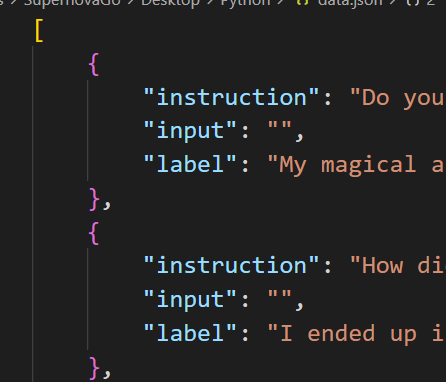
该 json 格式可通过如下代码直接转化为 Dataset
21df = pd.read_json('elaina_my_wife.json')2ds = Dataset.from_pandas(df)进行微调
完整微调代码（LoRA）如下：
861from huggingface_hub import login # 有些模型，如Llama3，需要登录才能访问2login(token='hf_xxxxxxxxx')3
4from datasets import Dataset5import pandas as pd6from transformers import AutoTokenizer, AutoModelForCausalLM, DataCollatorForSeq2Seq, TrainingArguments, Trainer, GenerationConfig7
8# 加载微调数据，将JSON文件转换为 Dataset 格式9df = pd.read_json('elaina_my_wife.json')10ds = Dataset.from_pandas(df)11
12# 加载指定模型的分词器，设定填充符号为终止符号13tokenizer = AutoTokenizer.from_pretrained('meta-llama/Meta-Llama-3-8B-Instruct', use_fast=False, trust_remote_code=True)14tokenizer.pad_token = tokenizer.eos_token15
16
17def process_func(example): # 数据处理函数，一个 example 就是一个样本18 MAX_LENGTH = 384 # 设置最大输入长度19 input_ids, attention_mask, labels = [], [], []20 21 # 指令必须按微调时的标准格式（模板）来输入22 instruction = tokenizer(f"<|start_header_id|>user<|end_header_id|>\n\n{example['instruction'] + example['input']}<|eot_id|><|start_header_id|>assistant<|end_header_id|>\n\n", add_special_tokens=False) # 不在开头加 special_tokens23 response = tokenizer(f"{example['label']}<|eot_id|>", add_special_tokens=False)24 25 input_ids = instruction["input_ids"] + response["input_ids"] + [tokenizer.pad_token_id] # input_ids 是 指令+输入+回答+终止符 的集合（按照指定模板）26 27 attention_mask = instruction["attention_mask"] + response["attention_mask"] + [1] # 和input_ids一一对应，eos token补充为 128 29 labels = [-100] * len(instruction["input_ids"]) + response["input_ids"] + [tokenizer.pad_token_id] # labels 和 inputs 等长，但指令和输入部分，使用 -100 替代30 31 if len(input_ids) > MAX_LENGTH: # 做一个截断，这个截断根据需求来确定，看是截断前面的内容还是截断后面的内容32 input_ids = input_ids[:MAX_LENGTH]33 attention_mask = attention_mask[:MAX_LENGTH]34 labels = labels[:MAX_LENGTH]35 return {36 "input_ids": input_ids, # 按模板格式tokenizer化的：指令+输入+输出37 "attention_mask": attention_mask, # 和input_ids对应，全1，表示全部关注38 "labels": labels # 长度和input_ids相同，但除了label部分，前面的元素被填充为-10039 }40
41
42# map函数，对ds数据中每一条样本都使用该函数，并移除原来未被tokenizer的列43tokenized_id = ds.map(process_func, remove_columns=ds.column_names)44
45import torch46
47model = AutoModelForCausalLM.from_pretrained('meta-llama/Meta-Llama-3-8B-Instruct', device_map={'': 0}, torch_dtype=torch.bfloat16) # 由于llama3用bfloat16训练的，加载时必须指定48
49from peft import LoraConfig, TaskType, get_peft_model50
51config = LoraConfig( # lora参数52 task_type=TaskType.CAUSAL_LM, # 目标：因果语言模型53 target_modules=["q_proj", "k_proj", "v_proj", "o_proj", "gate_proj", "up_proj", "down_proj"], # 需要进行lora微调的目标模块54 inference_mode=False, # 训练模式55 r=8, # Lora 秩56 lora_alpha=32, # Lora alpha，一般是 r*257 lora_dropout=0.1 # Dropout 比例58)59
60model = get_peft_model(model, config)61model.enable_input_require_grads() # 若开启梯度检查点时，则必须执行该方法。可降低对显存的要求，但会小幅增大其训练时长62args = TrainingArguments(63 output_dir="elaina_lora", # 训练过程中自动保存的文件夹64 per_device_train_batch_size=64, # 每个训练设备上的batch_size65 gradient_accumulation_steps=4,66 logging_steps=10, # 每隔多少步打印一次训练的 loss67 num_train_epochs=5, # 训练epochs68 save_steps=100, # 每隔多久保存一次训练时的模型69 learning_rate=1e-4,70 save_on_each_node=True,71 gradient_checkpointing=True # 梯度检查72)73
74trainer = Trainer(75 model=model,76 args=args,77 train_dataset=tokenized_id,78 data_collator=DataCollatorForSeq2Seq(tokenizer=tokenizer, padding=True),79)80
81trainer.train()82
83# 保存模型lora，以及tokenizer84peft_model_id = "elaina_llama3_2_lora"85trainer.model.save_pretrained(peft_model_id)86tokenizer.save_pretrained(peft_model_id)加载模型进行推理
511from transformers import AutoModelForCausalLM, AutoTokenizer2import torch3from peft import PeftModel4
5model_path = 'meta-llama/Meta-Llama-3-8B-Instruct'6lora_path = 'elaina_llama3_2_lora'7
8config = LoraConfig(9 task_type=TaskType.CAUSAL_LM,10 target_modules=["q_proj", "k_proj", "v_proj", "o_proj", "gate_proj", "up_proj", "down_proj"],11 inference_mode=True,12 r=8, # Lora 秩13 lora_alpha=32, # Lora alaph，具体作用参见 Lora 原理14 lora_dropout=0.1 # Dropout 比例15)16
17# 加载tokenizer18tokenizer = AutoTokenizer.from_pretrained('meta-llama/Meta-Llama-3-8B-Instruct')19# 加载模型，注意有的显卡比较老对bf16的支持度不好，所以在老卡上跑时默认fp16即可20model = AutoModelForCausalLM.from_pretrained('meta-llama/Meta-Llama-3-8B-Instruct', device_map={'': 0}, torch_dtype=torch.bfloat16)21# 加载lora权重22model = PeftModel.from_pretrained(model, model_id=lora_path, config=config)23
24messages = [{"role": "system", "content": ""}]25
26while True:27 prompt = input(">>>")28 messages.append({"role": "user", "content": prompt})29 30 # 参数tokenize用于设置是否tokenize化输出，如果False，返回的就是字符串31 # 参数add_generation_prompt的末尾是否加入assistant的开始生成符号，模型如果支持就有用32 text = tokenizer.apply_chat_template(messages, tokenize=False, add_generation_prompt=True)33 model_inputs = tokenizer([text], return_tensors="pt").to('cuda')34 generated_ids = model.generate(35 model_inputs.input_ids, # 模型的输入36 max_new_tokens=512, # 最大生成长度37 eos_token_id=tokenizer.encode('<|eot_id|>')[0] #当模型输出这个终止符号时，就不让它继续输出了38 )39 40 # model_inputs.input_ids就是token化的整个输入，generated_ids就是模型的token输出，但由于batch的存在，实际上是二维的，因此需要zip来匹配41 # 此外，模型的输出会包含输入作为前缀，因此在输出时要将其去掉！42 generated_ids = [output_ids[len(input_ids):] for input_ids, output_ids in zip(model_inputs.input_ids, generated_ids)]43 44 # 可以解码整个batch，但因为是一问一答，所以batch只有一个元素，且解码跳过了特殊符号，如终止符45 response = tokenizer.batch_decode(generated_ids, skip_special_tokens=True)[0]46 print('伊蕾娜>>>' + response)47
48 messages.append({"role": "assistant", "content": response})49 if len(messages) > 20: # 删除过早的记忆50 messages.pop(1) # 成对删除51 messages.pop(1)
预训练模型（CLM）
基于GPT-2的架构，预训练一个Python代码补全模型（CLM模型）
921# 1. 加载数据集，这个数据集是从一个高达180GB的数据集中提取出来的，但还是有8个G...2from datasets import load_dataset, DatasetDict3
4ds_train = load_dataset('huggingface-course/codeparrot-ds-train',split='train')5ds_valid = load_dataset('huggingface-course/codeparrot-ds-valid',split='validation')6
7raw_datasets = DatasetDict(8 {9 'train':ds_train,10 'valid':ds_valid11 }12)13
14# 2. 预处理数据，并构建数据加载器15from transformers import AutoTokenizer # 事实上Tokenizer也需要训练，但这里用现成的16
17content_length = 128 # 设置模型上下文的最大长度18tokenizer = AutoTokenizer.from_pretrained('huggingface-course/code-search-net-tokenizer')19
20def tokenize(element): # element 是一个传入的文本，也就是单个样本21 outputs = tokenizer(22 element['content'],23 truncation=True, # 当长度超过最大长度时是否截断24 max_length=content_length, # 设置最大长度25 return_overflowing_tokens=True, # 是否返回超出长度的tokens26 return_length=True # 是否返回每个样本的长度27 )28 input_batch = []29 for length,input_ids in zip(outputs['length'],outputs['input_ids']):30 if length == content_length:31 input_batch.append(input_ids) # 由于任务目标不同，本任务中输入基本都会被截断，最后一小段干脆不要了，省去了padding步骤32 return {'input_ids':input_batch} # 但其它任务，则不能这样写33
34tokenized_datasets = raw_datasets.map(tokenize, batched=True, remove_columns=raw_datasets['train'].column_names) # 去除没必要的原始数据35# 经过处理后，每个样本从原始的文本，变成了截断到 content_length 的句子，所以样本数量增加了36
37from transformers import DataCollatorForLanguageModeling38
39tokenizer.pad_token = tokenizer.eos_token # 设置填充字符为终止字符40data_collator = DataCollatorForLanguageModeling(tokenizer,mlm=False) # 该方法默认为 MLM 工作，设置mlm=False将转化为 CLM41
42# 3.配置模型43from transformers import AutoTokenizer,GPT2LMHeadModel,GPT2Config44
45config = GPT2Config( # 预训练模型的配置文件46 vocab_size=len(tokenizer), # 词表大小47 n_ctx=content_length, # 设置最大上下文长度48 bos_token_id=tokenizer.bos_token_id, # 开始标记的设置49 eos_token_id=tokenizer.eos_token_id, # 终止标记的设置50 n_embd=1600, # 嵌入维度51 n_layer=12, # 解码器堆叠层数52 n_head=12, # 注意力头数53 n_inner=None, # 前馈的隐藏层的神经元数量，一般不用设置而是默认为 n_embd*454 n_positions=content_length # 位置编码长度，一般和最大上下文长度是相等的55)56
57model = GPT2LMHeadModel(config) # 这个模型也可以自己用Pytorch定义58
59# 4.配置训练参数60from transformers import Trainer, TrainingArguments61
62args = TrainingArguments( # 训练参数63 output_dir='./pretrained', # 训练时的保存路径64 per_device_train_batch_size=32, # 训练集每个设备上的batch_size65 per_gpu_eval_batch_size=32, # 测试集的batch_size66 evaluation_strategy='steps', # 评估策略，'steps'指每隔一定step就评估，'epochs'则是每隔一定epoch就评估67 eval_steps=5_000, # 评估步数68 logging_steps=5_000, # 每5000步输出一次日志69 gradient_accumulation_steps=8, # 梯度累积步数，梯度累积变相增大了batch_size70 num_train_epochs=1, # 训练epochs71 weight_decay=0.1, # 权重衰减72 warmup_steps=1_000, # 学习率预热步数73 lr_scheduler_type='cosine', # 学习率调度器类型74 learning_rate=5e-4, # 初始学习率75 save_steps=5_000, # 训练中每隔多少步保存一次模型76 fp16=True, # 是否使用半精度，这里也可以使用 bf16=True 参数来使用bf16格式77 push_to_hub=False78)79
80trainer = Trainer( # 该类简化了训练过程！通过args参数，可设置学习的各种参数，例如学习率、优化器（默认AdamW）等，如果还不行，可自己定义一个MyTrainer类继承自Trainer类，然后重写其中的方法81 model=model, # 自定义的模型也可以使用args类和Trainer类来简化训练过程82 tokenizer=tokenizer,83 args=args,84 data_collator=data_collator,85 train_dataset=tokenized_datasets['train'],86 eval_dataset=tokenized_datasets['valid']87)88
89# 5.训练模型和保存90trainer.train()91model.save_pretrained(保存路径)92tokenizer.save_pretrained(保存路径)注意事项：
GPT-3相较于GPT-2在模型结构上基本没变化，只要增大参数量就是一个GPT-3模型。换句话说，Decoder-Only 模型都可以用 GPT2Config 来配置
如果需要自定义模型，也可以，直接使用pytorch定义模型即可，然后实例化，最后正常使用Trainer、DataCollator类
类似d_k，d_v等参数，在设定head数和嵌入维度后，一般就能自动得到，无需额外设置
dropout 在类中有默认形参，同样可以不用配置
由于任务目标不同，本任务中输入基本都会被截断，最后一小段干脆不要了，省去了padding步骤，但其它任务需要按实际需求写预处理函数！
预训练由于训练数据量比微调大多了，故学习率预热、日志记录步数都比微调更大
训练steps计算
在HF中，一般使用迭代步数来展示进程
其中 ceil 函数表示向上取整
学习率调度器
lr_scheduler 是在训练中动态调整学习率的策略
学习率调度器主要有以下几种：
固定步长衰减：每过一定步数，学习率减小一定大小
指数衰减：每过一步，学习率减少一定比例
余弦退火：每个周期内，学习率按照余弦函数变化
自适应学习率
余弦退火与重启：每个周期结束时，重新启动学习率，并且逐步减小最大学习率
训练Tokenizer
每个模型的Tokenizer都不一样，如果需要从头预训练一个模型的话，首先需要先训练得到一个Tokenizer
8. AI 小镇论文解析
斯坦福 《Generative Agents: Interactive Simulacra of Human Behaviuor》基于 ChatGPT 构建了一个沙盒环境，其中的智能体的行为就和真人一样
架构
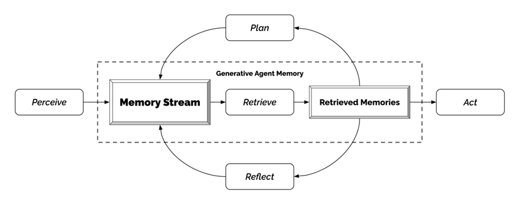
新的 Agent 架构由三个组件组成
记忆和检索
包含两个子模块，分别用于存储和检索记忆
Memory Stream
记忆流模块，是用自然语言存储某个智能体所有经历的容器，可使用列表、字典等
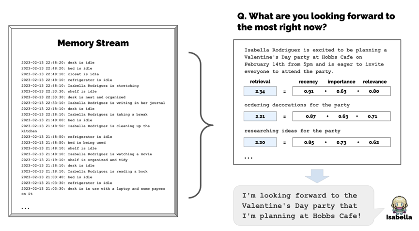
Retrieval Model
基于以下特性对记忆进行检索
时效性：近期的记忆将被赋予更高的分数
论文使用指数衰减函数进行赋分，自变量是游戏里的时间，K 为指数衰减因子，A 为初始值：
论文中指数衰减因子 K 为0.99，A 任取一个>0的数即可
重要性：更重要的记忆将得到更高的分数
有许多方法来实现重要性赋分，论文是将事件直接询问 ChatGPT，让它打 1-10 分
在某件事情发生时，其重要性分数就生成了，不是检索的时候才生成的
相关性：与当前情形相关的记忆将赋予更高的分数
论文中，每条记忆都以自然语言描述并发送给 ChatGPT，让它把记忆向量化（嵌入向量）。随后计算查询记忆（query memory）和所有记忆的余弦相似度，相似度高的就越相关，因此赋予更高的权重
检索模型综合上述三大特性来对每一条记忆赋分
首先是对每个特性的得分进行归一化，因为三个特性的尺度不同，论文中使用的是最大值最小值归一化
对三个分数进行加权求和，得到检索分数，论文中三个权重均为 1，也就是三者同等重要。根据分数选取前 n 条高分记忆，生成记忆流的一个子集。将这个子集作为上下文传递给 ChatGPT，并给出指令，即可生成回答
反思模块
当前存在的问题：如果仅仅有观察（Observation）的记忆，Agent 将难以进行推理，也难以泛化 Agent 的记忆。为了解决这个问题，论文中引入了第二种记忆，称为 Reflection
反思的产生
Reflection 是由 Agent 的 Observation 而产生的更高层次的、更抽象的记忆。反思作为一种记忆，同样有遗忘、检索等机制
反思周期性地进行并产生，在论文中，当最近的活动的记忆的重要性分数超过一个阈值时，就进行反思
反思的具体步骤
基于 Agent 最近的经历，询问 LLM 可以根据这些经历中可以提出一些什么问题
论文中将记忆流中最近的 100 条记忆拿出来，询问 LLM：只考虑以上信息，我们可以回答哪些关于主题的最重要的高层次问题？
将 LLM 产生的问题作为检索记忆，并收集检索到的记忆，这些记忆中也可能包含其它反思
将这些记忆作为陈述，让 LLM 提取多个高层次的见解，并引用作为这些见解的记忆
将反思作为记忆，存入记忆流中
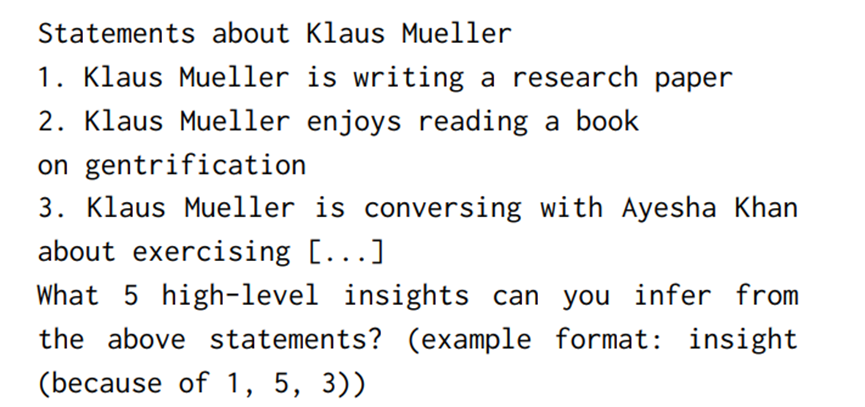
反思作为一种记忆，同样可以作为Statement来生成新的反思，不断重复下去。这样将生成一棵反思树，叶结点代表基础的 Observation，而非叶节点代表的思想越是抽象、越是高层次，在树上就越高
规划和反应
面临的问题：Agent 需要保证其行为的长期一致性和可信性，虽然LLM能生成短期可信的行为，但无法保证长期的一致和可信。有了规划后，还需要反应，否则无法和别的 Agent 交互，而只能跟着规划行动
Plans
规划描述了 Agent 未来的动作序列，并让其行为保持一致
一个 Plan 包含：地点、开始时间、持续时间（这是论文里的实现，也是最基本的 plan）
例如：for 180 minutes from 9am, February 12th, 2023, at Oak Hill College Dorm: Klaus Mueller’s room: desk, read and take notes for research paper
和反思一样，plan同样被存储在记忆流中，并且包含在检索的过程中，这允许 Agent 综合考虑 Observation、Reflection、Plans，来做出行为。Agent 可以在行动时更改计划
Plans 的递归产生
初始的 Plans 是较为粗糙的，需要分解成原子动作才能被一步步地有序执行。论文中采取自顶向下地递归生成每个 plan 的细节，其过程为：
创建当天的日程计划大纲
对于每个规划，生成细粒度更高的行动
论文中先是生成一天的规划，然后递归地分解成小时计的规划，再分解成 5-15 分钟计的单个行动
反应和规划更新
在每一个时间步上，向 LLM 提供 Agent 的基本信息和当前环境的观察结果，让 LLM 决定继续执行现有规划还是对环境做出反应（比如遇到了熟人）
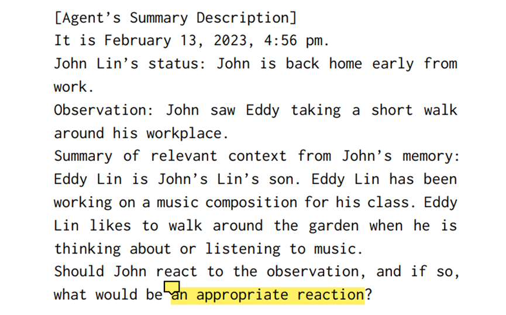
上面的上下文摘要通过两次查询并总结得到：一是 What is [observer]’s relationship with the [observed entity]?，二是[Observed entity] is [action status of the observed entity]，利用这两个问题检索记忆，并交由LLM总结出上下文摘要
如果没有反应，则继续执行原来的 Plans，如果有，则重新生成整个计划，新 Plans 包含 React，合适的 React 同样由 LLM 生成
对话
通过 Agent 彼此的记忆来生成对话
使用 Agent 对另一个 Agent 的记忆的总结，以及先前生成的可能的反应，询问 LLM 怎么说出第一句话
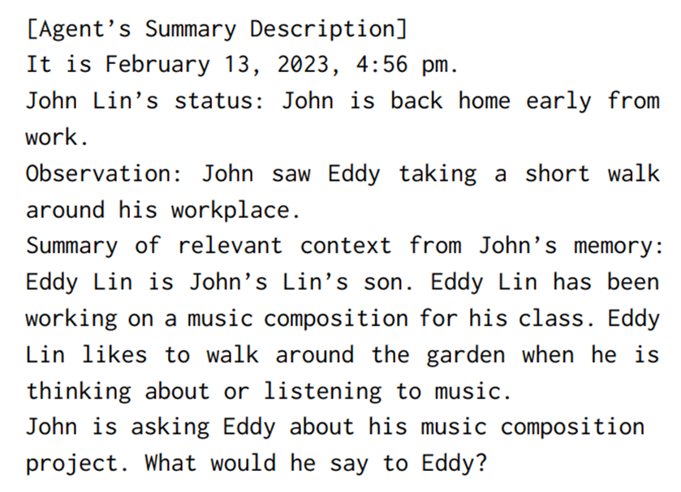
同样，另一个 Agent 检索关于询问的 Agent 的记忆，以及它的问题，决定是否回答，如果回答，则结合自身特点，以及当时的环境来回答
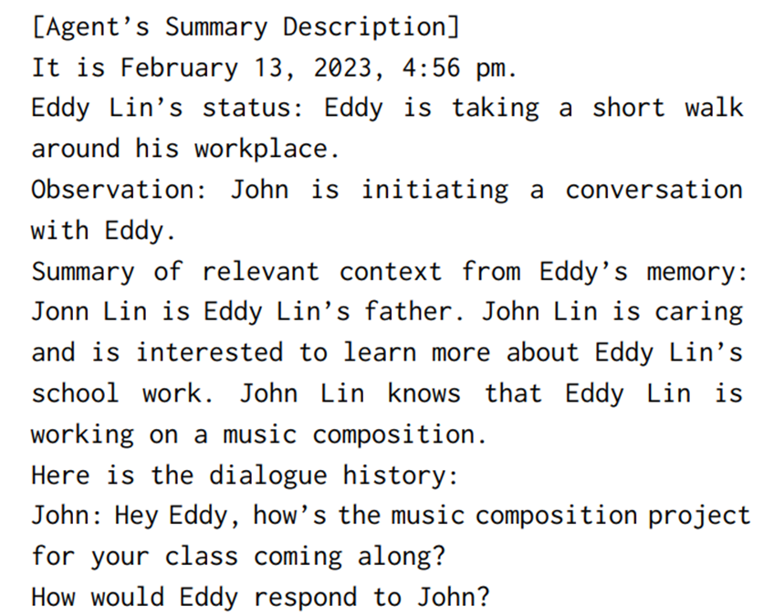
使用相同的机制持续生成对话，直到两个 Agent 中的一个决定结束对话
沙盒环境的实现
论文中的实验基于 Phaser 网页游戏开发框架实现的
使用一个 Server 来使沙盒世界中的环境信息能够供 Agent 使用，并使 Agent 能够影响环境
Server 维护一个 JSON 数据结构，包含每个 Agent 的信息，如：位置、当前动作、正在交互的对象等，均用自然语言描述
在每个沙盒时间步中，Server 解析来自 Agent 的任何对环境的改变，将 Agent 移动到新的位置，并更新其与正在交互的沙盒对象的状态
Server 还负责将处于每个 Agent 视野范围内的所有对象发送到 Agent 的记忆流中，以便 Agent 可以适当地作出反应。Agent 输出动作，然后更新 JSON，并进入下一时间步
让 Agent 感受到环境中的 Object
将沙盒环境（区域和对象）表示为一个树状数据结构，树中的边表示沙盒世界中的包含关系。将这棵树转化为自然语言，然后传递给 Agent
例如：“炉子”是“厨房”的子对象，被解释成“厨房里有一个炉子”
构建一个总体环境树的子树，作为某个 Agent 应该知道的世界（即使当前不在其视野范围内）。当 Agent 新发现一个地方，就会新增一个或多个节点，同样，Agent 的树可能会过时，并在重新进入某区域时更新树的该部分
在适当位置执行 Plans
有了 Plans，还需要在指定位置执行，否则行为就不可信。对此，需要遍历 Agent 当前存储的环境树，从树根开始递归，通过 LLM 寻找最合适的地方
具体方法是将树压缩成自然语言（xx里有xx的格式），然后询问 LLM 去哪合适，最后通过游戏路径算法让Agent移动到那里并执行 Action
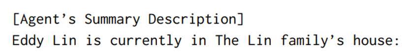
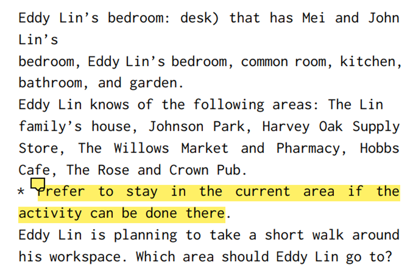
更新 Object 状态
直接将 Agent 输出的动作拿去问 LLM 会发生什么，比如 Agent 的动作是做咖啡，则 LLM 会输出 咖啡机被占用
模型的评估
对独立个体的评估
评价指标
保持自我
正确检索记忆
正确生成计划
正确做出反应
正确反思
评价方法
以 interview agent 的形式，问 agent 问题，得到答案，然后找到多名测试人员，对 “问题-答案” 进行可信度打分
采用消融测试，即测试全部架构都有，以及缺少（反思、规划、记忆流）其中一个或多个条件下的得分情况
端到端评估
对于整个模拟的社会的评估，同样是采用 interview 的形式，但问题是基于人际之间的交往
对于 AI 小镇实验的优化
对于不同的记忆，设置一个分段函数进行粗略的评分，例如 notice environment 就是最不重要的，notice person 就是比较重要的，而 reflection 就是最重要的，减少重要性评分的 GPT 依赖
反思的第一步中，仅输入重要性较高的记忆，以减少 GPT 的消耗
反应：只有注意到新东西时才提交观察结果，如果呆在同一个地方做一些事情，则不必持续提交。当然连续对话时必须每个对话都提交结果，并询问 LLM 是否重新生成规划，生成新的规划时，需要提交原来的规划作为参考
减少询问 LLM 的句子，如 xx 年 xx 号这种，在大部分情况下都可以省略，只精确到具体时间
生成计划时，长时间跨度上只生成粗略的计划，精细的计划仅生成近期的
9. 本地部署大语言模型
一、Ollama+ChatBox 方案
总体思路：
使用 ollama 运行大语言模型
使用ChatBox作为 UI 客户端
安装ollama
ollama是一个专注于在本地运行大模型的开源项目，支持 ollama、Gemma 在内的多个开源大语言模型，不过它是命令行交互的。平台为Windows、Linux、MacOS
步骤：
前往官网：Ollama官网
下载 Ollama，并安装
在官网的右上角，有个Models选项，点击并选择其中一个模型，选择合适的模型版本，如
Gemma 2b和Gemma 7b，复制右边的命令行指令，进入 cmd 并执行，即可自动下载
安装ChatBox
ollama 是命令行程序，交互有些不方便，拓展性也不好发挥，因此安装ChatBox，这是一个开源模型集成客户端，不仅提供在线的大语言模型服务（如调用 openai 的 API ），还支持 ollama 这种本地大模型程序
前往 Github 项目地址
下载合适的版本并安装
基本运行
命令行输入
ollama serve即可运行 ollama，返回端口号打开ChatBox，选择模型提供者为 ollama，输入 API 域名
http://localhost:端口号，选择模型，调整temperature，即可启用模型，并进行交互式对话在设置-对话一栏，还能设置system prompt，也就是对话提示，俗称催眠。如果对于特定对话需要特定system prompt，也可也去特定对话里修改该提示
使用RAG
RAG的基本流程
RAG（Retrieval Augmented Generation）全称检索增强生成，是 LLM 应用的一个有效方案，基本思想是通过检索获取相关知识并将其融入prompt中，让大模型能够参考相应的知识而给出合理的回答，即“检索+生成”
数据准备：将私域数据先进行文本分割，然后通过嵌入模型，生成向量语义，并存储到 vector database中
文本分割一般有两种：
句分割：以句子分隔，如句号、感叹号等分割方式
固定长度分隔：根据embedding模型的长度限制，将文本分割成固定长度，如256 Tokens
当用户提出问题时，question将被embedding做成向量，并作为查询向量去vector database中进行查询，选取相关性高的几条输出
将输出的知识，以及额外的prompt，作为最终的 prompt，提交给 LLM，由 LLM 产生回答
【任务描述】 假如你是一个专业的客服机器人，请参考【背景知识】，回答问题 【背景知识】 {content} // 数据检索得到的相关文本 【问题】 石头扫地机器人P10的续航时间是多久？
AnythingLLM
一个基于RAG方案构建的开源、高效、可定制的私有知识库解决方案。直接下载并安装即可，前往官网
启动 AnythingLLM，点击Get Started，模型来源选择 Ollama，URL填本地IP及端口：http://127.0.0.1:11434，Embedding Model 和前面的同理，并选择之前下载的嵌入模型，数据库选择默认的第一个。随后创建工作区
有两种对话模式：
Chat Mode：LLM 会根据自己的知识，以及document来组织答案
Query Only：只根据上传的document来给出答案
基本模型下载
嵌入模型：去ollama官网下载，例如：
ollama pull nomic-embed-text:lastest
RAG的使用
启动Ollama作为后台服务
新建一个工作区，如果要更改非默认的模型、Chat mode以及Prompt，可点击齿轮按钮
点击向上的箭头按钮，即可上传文件。点击左下方click to upload...这个按钮，选择文件上传，并在上方勾选，点击move to workspace，最后点击save and embed，当出现Workspace updated successfully即配置完成
回到 workspace，现在即可对话
每个工作区都可单独上传知识库文件，并且可点击上传按钮，更改知识库文件的使用
需要注意：有的模型（比如Gemma 2b）使用知识库的效果并不好，可以试着换几个模型
二、Dify 方案
Dify 是一个开源大预言模型应用开发平台，支持本地私有部署大语言模型，能进行高度定制。同时支持在线模型的API和本地模型，支持RAG、Agent、工作流
与 Dify 类似的项目还有 FastGPT、Coze 等，其中 FastGPT 开源且支持可视化的工作流，支持常见的大模型，操作便捷，支持 RAG 和 Agent。Coze 为闭源项目，由字节跳动开发，易用但可定制性有一定限制，RAG 场景支持较弱，Agent 功能丰富，同样支持工作流
10. 智能 Agent 执行总结任务
技术栈：
写爬虫，爬取指定网页，例如arxiv的论文，一些科技自媒体的文章
如何定时执行任务
本地部署大语言模型或直接使用 API